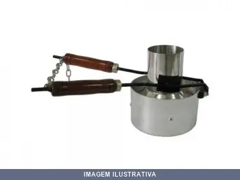
ABAFADOR CHAMAS FRIG SEGMEN
Indicação de Uso: Abafador de chamas para maçaricos e queimadores de gás, utilizado em trabalhos de soldagem, aquecimento e corte térmico. Material e Resistência: Construído em segmento refratário, resistente a altas temperaturas geradas pela chama. Vantagem Prática: Protege áreas adjacentes ao trabalho, contendo e direcionando o calor da chama durante operações de soldagem e corte.
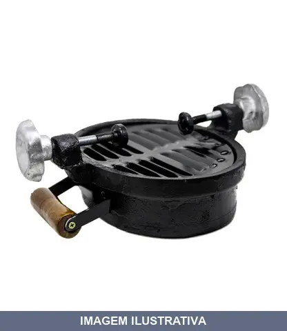
ABAFADOR CHAMAS OVAL SEGMENTO
Formato: Oval, projetado para se adaptar a diferentes tipos de ponteiras de escapamento, especialmente as chamadas "boca de sapo". Material: Geralmente confeccionado em alumínio fundido na cabeça (parte superior) e alumínio laminado no corpo, o que proporciona leveza e alta resistência ao calor. Mecanismo Interno: Possui câmaras e anticâmaras internas com duas peneiras (telas) de retenção, que servem para neutralizar chamas e reter calorias e faíscas vindas do motor a diesel ou gasolina. Fixação
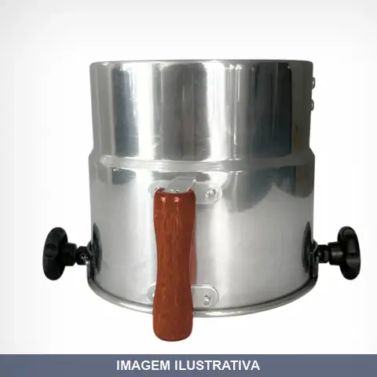
ABAFADOR CHAMAS PEQUENO VOLVO
Aplicação: Caminhões Volvo (FH, FM, NH) e motores estacionários (empilhadeiras, geradores) com saída de escapamento de 160mm. Tamanho: Pequeno (curto). Diâmetro Interno: 160 mm. Material: Alumínio fundido na cabeça (parte superior) e alumínio laminado no corpo. Sistema de Retenção: Possui sistema interno de câmaras e antecâmaras (peneiras) para reter calorias e apagar faíscas. Fixação: 2 manípulos (parafusos/borboletas) em material plástico resistente ao calor ou alumínio para ajuste no escapame
![ABAFADOR CHAMAS PLASTCOR 120MM [021387]](fotos/021387.webp)
ABAFADOR CHAMAS PLASTCOR 120MM [021387]
Indicação de Uso: Abafador de chamas para uso em trabalhos de soldagem, corte e operações com fogo. Material e Resistência: Confeccionado em metal resistente ao calor, com cabo de madeira. Vantagem Prática: Protege saídas de escapamentos, abafando faiscas e chamas durante operações de transportes.
![ABAFADOR CHAMAS PLASTCOR 140MM [023125]](fotos/023125.webp)
ABAFADOR CHAMAS PLASTCOR 140MM [023125]
Indicação de Uso: Proteção de escapamento veicular, reduzindo emissão de faíscas e chamas em motores a combustão. Material e Resistência: Corpo em metal resistente ao calor, com design modular para encaixe em tubos de descarga. Vantagem Prática: Câmaras internas que dissipam e contêm chamas, reduzindo riscos de incêndio em ambientes com gases inflamáveis.
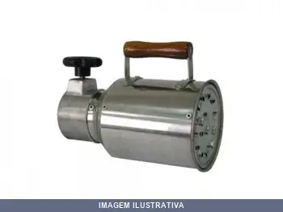
ABAFADOR CHAMAS PLASTCOR 160MM [022748]
Indicação de Uso: Abafador para contenção e extinção de chamas em trabalhos com solda, corte e outros processos que geram faíscas e combustão. Material e Resistência: Fabricado em material resistente ao calor e incombustível. Vantagem Prática: Oferece proteção eficaz contra propagação de chamas durante operações de soldagem e trabalhos em espaços confinados.
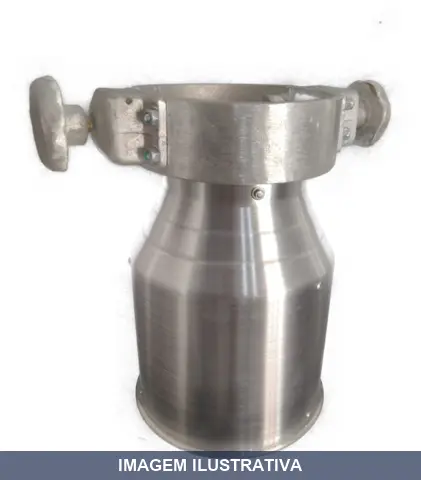
ABAFADOR CHAMAS SEGMENTO 140MM [020759]
Indicação de Uso: Equipamento portátil de segurança contra incêndio para abafar e conter chamas em ambientes com risco de combustão. Uso manual em emergências. Material e Resistência: Corpo em alumínio, alças em material resistente ao calor. Vantagem Prática: Acionamento rápido e seguro, adequado para contenção imediata de focos de fogo em espaços confinados e áreas de risco.
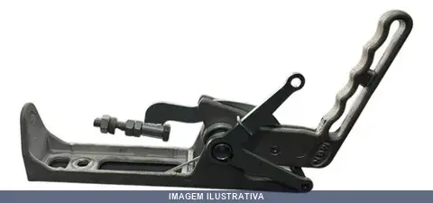
ACIONADOR ALAVANCA JOWEI 1
Acionador com uma alavanca para acionamento manual de dispositivos elétricos ou mecânicos. Indicado para instalações que necessitam comando direto e simples. Material em metal com resistência adequada ao uso repetitivo. Vantagem Prática: operação intuitiva e rápida com uma única alavanca.
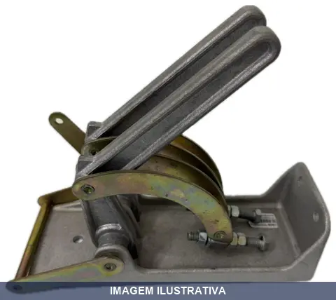
ACIONADOR ALAVANCA JOWEI 2
Indicação de Uso: Acionador para sistemas elétricos e hidráulicos que demandam comando de duas posições através de alavancas. Material e Resistência: Construído para resistir a operações repetidas em ambientes de trabalho. Vantagem Prática: Duas alavancas permitem controle dual de funções, oferecendo flexibilidade operacional em painéis de comando.
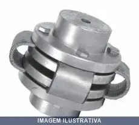
ACOPLADOR COM CORREIA CO GABITEC
Acoplador com correia para transmissão de potência entre eixos. Indicado para conjuntos motor/máquina com relação de velocidades 1:1 e espaço reduzido. Absorve vibrações, choques mecânicos e desalinhamentos, protegendo os equipamentos acoplados. Montagem simples e prática.
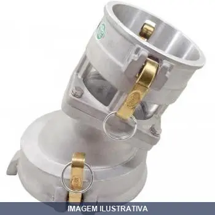
ACOPLADOR COM VISOR MGN
ADAPTADOR DE DESCARGA 6'' FEMEA X 4'' FEMEA COM VISOR Adaptador de Descarga 6''F X 4''F com Visor O Adaptador de Descarga é um engate de redução de 6" fêmea para 4" fêmea com visor, Projetado para a adaptação entre o Engate API e o mangote. Geralmente é utilizado para o descarregamento de líquidos em tanques rodoviários com Sistema Bottom Loading. INFORMAÇÕES TÉCNICAS Material de Fabricação: Alumínio Compatibilidade de Produtos: Combustíveis Vedação Utilizada: Nítrilica Pressão de Teste: 250 kPa
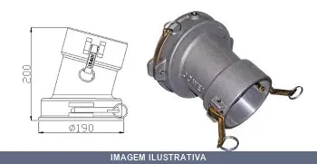
ACOPLADOR JOWEI
Acoplador hidráulico ou pneumático de uso em sistemas de transmissão de fluidos. Indicado para conexões rápidas em linhas de ar comprimido, óleo ou água. Material em metal resistente à pressão. Facilita acoplamento e desacoplamento sem perda excessiva de fluido.

ADAPTADOR ALUMINIO PARA MANGUEIRA . AERR GABITEC
Indicação de Uso: Adaptador para conexão e redução de mangueiras em sistemas hidráulicos e pneumáticos. Material e Resistência: Construído em alumínio, material leve e resistente à corrosão. Vantagem Prática: Facilita a interconexão entre mangueiras de diâmetros diferentes, reduzindo perdas e otimizando o fluxo em aplicações industriais e comerciais.

ADAPTADOR ALUMINIO PARA MANGUEIRA GABITEC 1
AER 1 X 1 - ADAPTADOR ESCAMA X ROSCA 1 X 1 NIPLES PARA MANGOTE CONEXÕES ADAPTADOR DE PRECISÃO P/ MANGOTE Descrição: Possui uma extremidade com rosca externa e a outra extremidade com escamas. As escamas são usinadas para garantir um encaixe perfeito da mangueira/mangote. Fabricadas nos diâmetros de 1/2 a 4" , são oferecidas com engates de rosca BSP interna ou externa conforme NBR 6414 , ou ainda com escamas para mangueira/mangote. A precisão das roscas proporciona excelente estanqueidade ; a

ADAPTADOR ALUMINIO PARA MANGUEIRA GABITEC 1.1/2
AER 1.1/2 X 1.1/2 - ADAPTADOR ESCAMA X ROSCA 1.1/2X1.1/2 NIPLES PARA MANGOTE CONEXÕES ADAPTADOR DE PRECISÃO P/ MANGOTE Descrição: Possui uma extremidade com rosca externa e a outra extremidade com escamas. As escamas são usinadas para garantir um encaixe perfeito da mangueira/mangote. Fabricadas nos diâmetros de 1/2 a 4" , são oferecidas com engates de rosca BSP interna ou externa conforme NBR 6414 , ou ainda com escamas para mangueira/mangote. A precisão das roscas proporciona excelente est

ADAPTADOR ALUMINIO PARA MANGUEIRA GABITEC 1.1/4
AER 1.1/4 X 1.1/4 - ADAPTADOR ESCAMA X ROSCA 1.1/4X1.1/4 NIPLES PARA MANGOTE CONEXÕES ADAPTADOR DE PRECISÃO P/ MANGOTE Descrição: Possui uma extremidade com rosca externa e a outra extremidade com escamas. As escamas são usinadas para garantir um encaixe perfeito da mangueira/mangote. Fabricadas nos diâmetros de 1/2 a 4" , são oferecidas com engates de rosca BSP interna ou externa conforme NBR 6414 , ou ainda com escamas para mangueira/mangote. A precisão das roscas proporciona excelente est

ADAPTADOR ALUMINIO PARA MANGUEIRA GABITEC 1/2
AER 1/2 X 1/2 - ADAPTADOR ESCAMA X ROSCA 1/2 X 1/2 NIPLES PARA MANGOTE CONEXÕES ADAPTADOR DE PRECISÃO P/ MANGOTE Descrição: Possui uma extremidade com rosca externa e a outra extremidade com escamas. As escamas são usinadas para garantir um encaixe perfeito da mangueira/mangote. Fabricadas nos diâmetros de 1/2 a 4" , são oferecidas com engates de rosca BSP interna ou externa conforme NBR 6414 , ou ainda com escamas para mangueira/mangote. A precisão das roscas proporciona excelente estanqueida
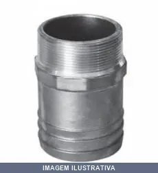
ADAPTADOR ALUMINIO PARA MANGUEIRA GABITEC 1X3 4
Adaptador de redução para mangueira com uma extremidade com engate de escamas e a outra com rosca, conforme NBR 6414. Indicação de Uso: conexão e redução de diâmetro em sistemas de mangueira hidráulica e pneumática. Material e Resistência: alumínio. Vantagem Prática: facilita acoplamento entre mangueiras de diferentes diâmetros e rosca BSP.

ADAPTADOR ALUMINIO PARA MANGUEIRA GABITEC 2
Adaptador de alumínio para mangueira com uma extremidade em rosca externa (fêmea) e outra com escamas. As escamas são usinadas para garantir encaixe seguro da mangueira. Indicação de Uso: Conexão de mangueiras hidráulicas e pneumáticas. Material e Resistência: Alumínio com escamas usinadas de precisão. Vantagem Prática: Encaixe firme e vedação confiável em sistemas de fluidos.
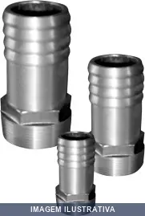
ADAPTADOR ALUMINIO PARA MANGUEIRA GABITEC 2.1/2
AER 2.1/2 X 2.1/2 ADAPTADOR ESCAMA X ROSCA 2.1/2 X 2.1/2 NIPLES PARA MANGOTE CONEXÕES ADAPTADOR DE PRECISÃO P/ MANGOTE Descrição: Possui uma extremidade com rosca externa e a outra extremidade com escamas. As escamas são usinadas para garantir um encaixe perfeito da mangueira/mangote. Fabricadas nos diâmetros de 1/2 a 4" , são oferecidas com engates de rosca BSP interna ou externa conforme NBR 6414 , ou ainda com escamas para mangueira/mangote. A precisão das roscas proporciona excelente est
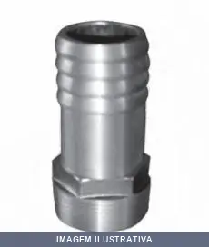
ADAPTADOR ALUMINIO PARA MANGUEIRA GABITEC 3
Adaptador em alumínio para conexão de mangueira tipo mangote. Possui uma extremidade com rosca externa e outra com escamas usinadas, garantindo encaixe seguro e vedação adequada da mangueira. Indicação de Uso: Conexão e adaptação de mangueiras hidráulicas e pneumáticas. Material e Resistência: Alumínio com escamas usinadas de precisão. Vantagem Prática: Facilita a montagem e desmontagem rápida de mangueiras em sistemas de ar comprimido e hidráulicos.

ADAPTADOR ALUMINIO PARA MANGUEIRA GABITEC 3/4
AER 3/4 X 3/4 - ADAPTADOR ESCAMA X ROSCA 3/4 X 3/4 NIPLES PARA MANGOTE CONEXÕES ADAPTADOR DE PRECISÃO P/ MANGOTE Descrição: Possui uma extremidade com rosca externa e a outra extremidade com escamas. As escamas são usinadas para garantir um encaixe perfeito da mangueira/mangote. Fabricadas nos diâmetros de 1/2 a 4" , são oferecidas com engates de rosca BSP interna ou externa conforme NBR 6414 , ou ainda com escamas para mangueira/mangote. A precisão das roscas proporciona excelente estanquei
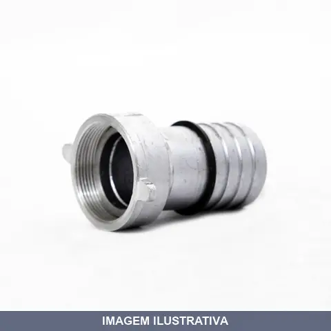
ADAPTADOR ALUMINIO PARA MANGUEIRA GIRATORIO FEMEA AFE
Adaptador de alumínio para mangueira medida 1 polegada com rosca fêmea BSP. Possui encaixe do tipo espigão para mangueira flexível. Material: alumínio conforme norma NBR NM ISO 7.1. Indicado para sistemas hidráulicos, irrigação e aplicações gerais. Proporciona estanqueidade e baixo peso, facilitando o manuseio e montagem.
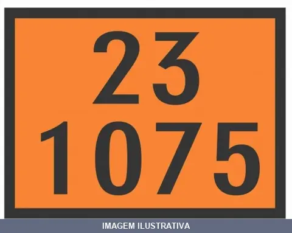
ADESIVO 23-1075 SEGMENTO
Adesivo de sinalização para transporte de produtos perigosos, trazendo o número de risco 23 e o número ONU 1075, correspondente ao GLP (gás liquefeito de petróleo). Utilizado em veículos e embalagens para identificar o tipo de carga transportada, conforme exigido para produtos perigosos.
ADESIVO 30-1202 SEGMENTO
Indicação de Uso: Adesivo para fixação de materiais diversos em aplicações industriais e de construção. / Material e Resistência: Formulação à base de resina com alta aderência e resistência mecânica. / Vantagem Prática: Secagem rápida e aplicação versátil em múltiplos substratos.
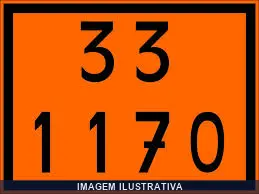
ADESIVO 33-1170 PLASTCOR
Adesivo de contato à base de etanol para colagem de materiais diversos. Indicação de Uso: colagem de placas, painéis, revestimentos e componentes em geral. Material e Resistência: solução de etanol com alta volatilidade e rápida fixação. Vantagem Prática: secagem rápida e aderência imediata após prensagem.

ADESIVO 33-1203 SEGMENTO
Adesivo de sinalização para transporte de produtos perigosos, com código Kemler 33 e número ONU 1203, identificando gasolina, conforme normas de transporte rodoviário. Indicado para fixação em veículos e embalagens que transportam essa substância, atendendo às exigências de sinalização de segurança.
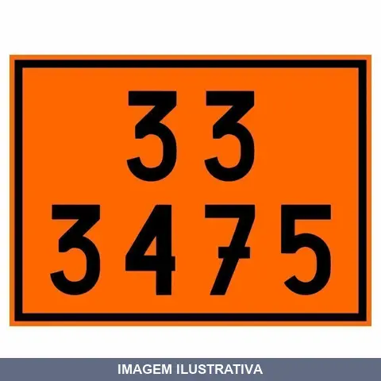
ADESIVO 33-3475 SEGMENTO
Adesivo de sinalização de risco (painel de segurança) com número de risco 33 e número ONU 3475, utilizado para identificação de produtos perigosos durante o transporte. Painel na cor laranja com bordas pretas, conforme exigido para sinalização de cargas perigosas em veículos de transporte.
ADESIVO 80-2794 SEGMENTO
Placa de sinalização de risco, na cor laranja, contendo o número Kemler 80 e o número ONU 2794. Utilizada para identificação de produtos perigosos no transporte, conforme exigido para veículos de carga. Indicada para uso em caminhões e demais aplicações de sinalização obrigatória.
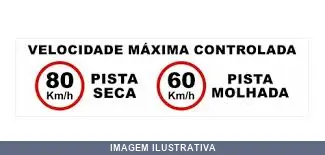
ADESIVO 80KM PISTA SECA 60KM PISTA MOLHADA SEGMENTO
Indicação de Uso: Sinalização de limite de velocidade em vias públicas e privadas, aplicável em postes, placas e estruturas de trânsito. Material e Resistência: Adesivo vinil autocolante, resistente a intempéries, raios UV e variações climáticas sem desbotamento. Vantagem Prática: Fixação fácil e durável para sinalização de segurança viária.
ADESIVO 90-3082 SEGMENTO
Indicação de Uso: Placa adesiva de sinalização para identificação de produtos perigosos em transporte, exibindo o número ONU 3082. / Material e Resistência: Painel laranja com números em preto, numeração 90-3082. / Vantagem Prática: Proporciona identificação visual clara e durável em diferentes superfícies.
ADESIVO CORROSIVO SEGMENT 33X33 8 [021222]
Indicação de Uso: Identificar veículos transportadores de carga perigosa e materiais corrosivos (Classe 8). Material e Resistência: Vinil auto-adesivo, impermeável e resistente a intempéries. Vantagem Prática: Sinalização em losango conforme norma ABNT NBR 7500.
ADESIVO CORROSIVO SEGMENT0 30X30 8 [021722]
Indicação de Uso: Sinalização de risco para transporte de material corrosivo conforme NBR 7500, classe 8. Material e Resistência: Adesivo autocolante em vinil, cores branco e preto. Vantagem Prática: Autocolante com impressão digital, facilita aplicação em veículos e superfícies.
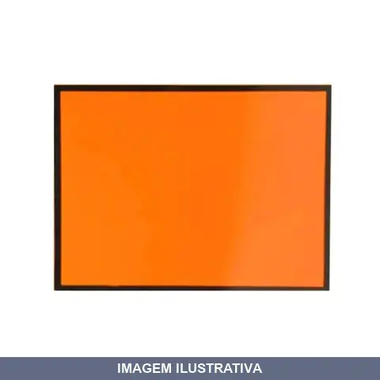
ADESIVO LARANJA SEGMENTO
Adesivo autoadesivo para sinalização de segurança. Dimensões 30 x 40 cm na cor laranja. Material em PVC de alta resistência com aderência em superfícies lisas. Resistente a intempéries, abrasão e agentes externos. Indicado para sinalizar áreas de risco, atenção, perigo e interdição em ambientes internos e externos. Fixação autoadesiva pronta para uso.

ADESIVO SUBST PERIGOSAS DIV 9
Indicação de Uso: Sinalização de substâncias perigosas diversas para identificar veículos transportadores de carga perigosa conforme norma NBR 7500. Material e Resistência: Vinil autoadesivo, impermeável e resistente a intempéries, mantendo durabilidade durante transporte. Vantagem Prática: Aplicação direta em veículos, contêineres e superfícies diversas sem necessidade de cola adicional.
ADESIVO TOXICO SEGMENTO
Indicação de Uso: Identificar substâncias tóxicas em transporte terrestre, armazenamento e manuseio conforme regulamentação ABNT NBR 7500. Material e Resistência: Vinil adesivo, impermeável, resistente à água, umidade, raios UV e variações climáticas. Vantagem Prática: Autoadesivo com fixação, fácil aplicação em superfícies lisas.
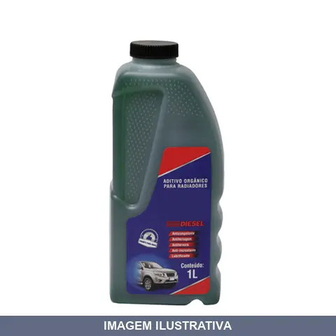
ADITIVO RADIADOR DIESEL LITRO GT2000
Aditivo orgânico pronto para uso em radiadores. Protege contra impregnação de sujeira e oxidação do motor e seus componentes. Embalagem 1 litro. Aplicação direta sem necessidade de diluição.
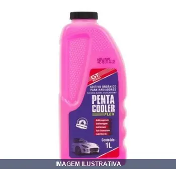
ADITIVO RADIADOR FLEX LITRO GT2000
Aditivo orgânico pronto para uso em radiadores para motores a gasolina, álcool e GNV. Proporciona proteção evitando impregnação de sujeira e oxidação do motor e componentes. Aplicação: completar o reservatório ou encher o radiador em caso de troca.
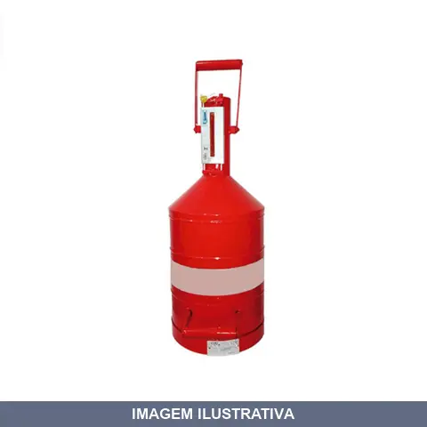
AFERIDOR COMBUSTIVEL LITROS
Indicação de Uso: Medida aferida obrigatória para verificação periódica das bombas de combustível em postos de abastecimento. Material e Resistência: Aço carbono com chapas metálicas, visor em vidro temperado, alças para transporte, escala de graduação clara. Vantagem Prática: Certificado e lacrado individualmente pelo INMETRO, resolução de 20 ml, margem de erro de ±200 ml. Peso aproximado 7 kg.
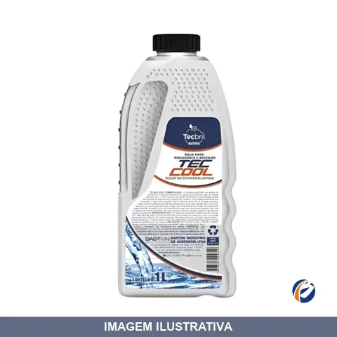
AGUA DESMINERALIZADA LITRO TECBRIL
Indicação de Uso: Manutenção de sensores, bombas d'água, radiadores, mangueiras e baterias automotivas. Uso em sistemas de arrefecimento, ferros de passar a vapor e processos laboratoriais. Material e Resistência: Água isenta de sais minerais e impurezas. Vantagem Prática: Evita danos e oxidação de componentes automotivos, prolongando a vida útil de peças.
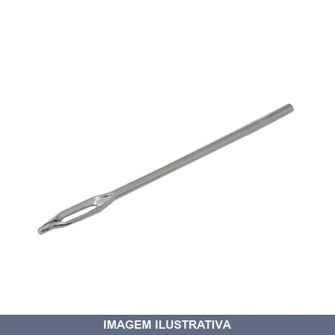
AGULHA PARA APLICADOR DE REPAROS VONDER
Agulha Indicada para aplicação de reparos em pneus sem câmara. Utilizada em conjunto com o cabo tipo T do aplicador de reparos (não acompanha).
APLICADOR DE CERA WORKER
Indicação de Uso: Aplicação de ceras, polidores e selantes em acabamentos automotivos. Material e Resistência: Espuma reticulada. Estrutura macia e leve. Vantagem Prática: Espalhamento uniforme do produto com facilidade de aplicação.
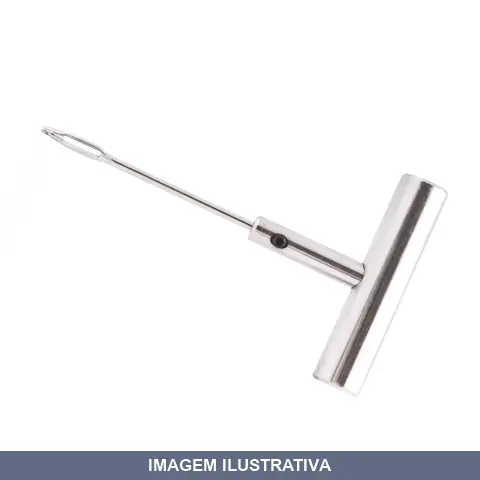
APLICADOR DE REPAROS VONDER
Indicação de Uso: Aplicação de reparos e acabamentos em superfícies diversas. Material e Resistência: Construção robusta para uso repetido. Vantagem Prática: Ferramenta prática para trabalhos de manutenção e reparo em geral.
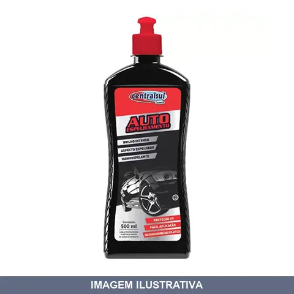
AUTO ESPELHANTE CENTERSUL
Indicação de Uso: Proteção e brilho intenso em pinturas automotivas. Material e Resistência: Cera com selantes, proporciona película protetora, resistência UV e hidrorepelência. Vantagem Prática: Aplicação rápida e fácil com pano de microfibra; não mancha borrachas e plásticos; evita acúmulo de poeira e água na lataria.
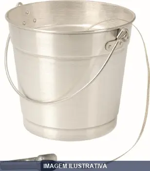
BALDE ALUMINIO COM CORDOALHA GRANDE LITRO
Balde de alumínio com capacidade de 12 litros. Cordoalha de cabo de aço revestida com PVC cristal. Dimensões: 34 cm altura, 30 cm largura, 26 cm profundidade. Indicado para transporte de líquidos, carga e descarga de combustível. Estrutura leve e resistente com alça de transporte.

BALDE ALUMINIO COM CORDOALHA PEQUENO LITRO
Indicação de Uso: Transporte e descarga de combustíveis, líquidos e cargas perigosas. Material e Resistência: Alumínio com cordoalha confeccionada em cabo de aço revestido com PVC cristal. Alça para transporte. Vantagem Prática: Estrutura leve e durável com aterramento para segurança contra eletricidade estática.
BATIDA PEDRA PRETO MAXIRUBBER
Indicação de Uso: Proteção de partes externas e inferiores de veículos como chassis, pára-lamas, caixas de ar e painéis contra chuva, maresia, batidas de pedra e terra. Também aplicável no interior de portas, porta-malas, assoalhos e capôs. / Material e Resistência: Revestimento elastomérico com propriedades anti-corrosão e amortecimento de vibrações. / Vantagem Prática: Reduz ruídos internos e oferece proteção adicional contra corrosão e umidade.
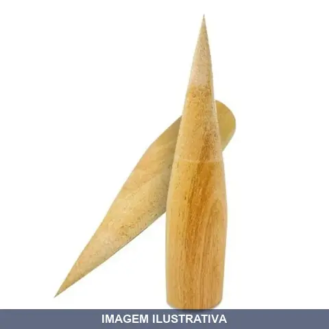
BATOQUE MADEIRA SEGMENTO
Indicação de Uso: Vedação temporária de furos e aberturas em tubulações, canos e conexões em aplicações não pressurizadas. Material e Resistência: Confeccionado em madeira, apropriado para vedação simples e de baixo custo. Vantagem Prática: Solução econômica e de fácil aplicação para fechamento rápido de tubulações desativadas ou em manutenção.
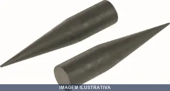
BATOQUE PLASTICO PLASTCOR
Batoque de plástico para vedação e tamponamento de tubulações e furos. Confeccionado em polipropileno (PP), oferece vedação simples e rápida em aplicações de ferragem e hidráulica. Indicação de Uso: Estancamento temporário de vazamentos em tubos e conexões, vedação de orifícios em peças. Material e Resistência: Polipropileno resistente e durável. Vantagem Prática: Fácil inserção e remoção, reutilizável.
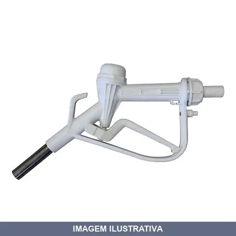
BICO DE ABASTECIMENTO DE POLIETILENO PARA ARLA REF BAPARL
Indicação de Uso: Abastecimento de Arla 32 e água. Material e Resistência: Corpo em polietileno com ponteira em aço inoxidável. Vedações em viton. Vantagem Prática: Vazão de 35 a 40 litros/minuto, resistente à corrosão com dessarme automático.
BOLA PARA ENGATE ABNT CROMO ENGATCAR
Indicação de Uso: Bola de engate para tracionamento de carretas, trailers e reboques em veículos. Material e Resistência: Fabricada em aço 1020 forjado com acabamento cromado, resistente a corrosão. Vantagem Prática: Compatível com engates padrão, acompanha porca e cupilha para fixação.
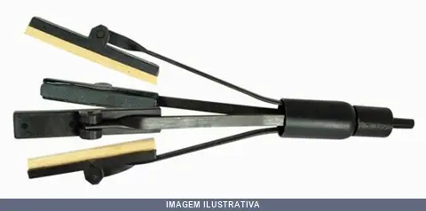
BRUNIDOR DA CAMISA DO CILINDRO 101207 RAVEN
Indicação de Uso: Brunidor para camisa de cilindro em motores de veículos de passeio. Material e Resistência: Pedras abrasivas de carbureto de silício, granulação 120. Vantagem Prática: Executa brunimento uniforme e preciso da camisa do cilindro, corrigindo imperfeições internas e garantindo acabamento adequado para funcionamento dos pistões.
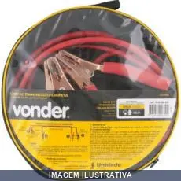
CABO BATERIA 10MM 3.0M VONDER
Cabo para bateria com garras de aço carbono cobreado. Indicado para transferência de carga e partida de emergência em baterias de veículos. Material das garras: aço carbono cobreado. Capacidade máxima: 100 A. Conteúdo: 1 cabo com garras.
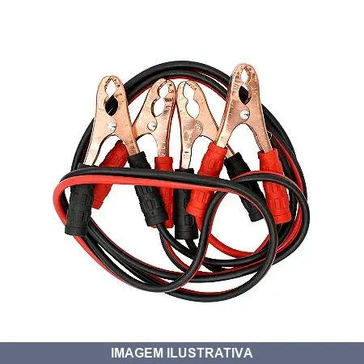
CABO BATERIA 200A 2,5M LOTUS
Indicação de Uso: Transmissão de carga em baterias automotivas Material e Resistência: Cabo elétrico em alumínio revestido de cobre, encapado em PVC. Garras tipo jacaré em cobre, revestimento em borracha termoplástica (TPR), espessura 10mm. Vantagem Prática: Garras extra fortes com design ergométrico, fornecido com sacola plástica transparente.

CABO BATERIA 600A 2,5M LOTUS
Indicação de Uso: Transmissão de carga em baterias automotivas Material e Resistência: Cabo elétrico em alumínio revestido de cobre, encapado em PVC. Garras tipo jacaré em cobre, revestimento em borracha termoplástica (TPR), espessura 10mm. Vantagem Prática: Garras extra fortes com design ergométrico, fornecido com sacola plástica transparente.
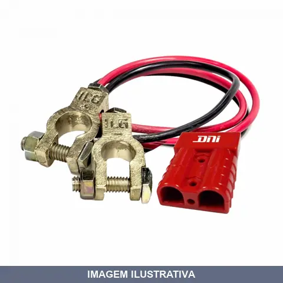
CABO PARA BATERIA EXTERNO NOBREAK EMG RAPIDO E TERMINAL BATE DNI
Cabo para bateria externa de nobreak. Possui terminal tipo bate para conexão rápida e segura. Indicado para ampliação ou substituição de cabos em sistemas de nobreak, permitindo conexão ágil entre bateria e equipamento.
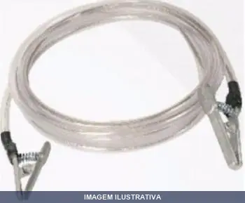
CABO TERRA COM METROS
Indicação de Uso: Aterramento de veículos e equipamentos em operações de carga e descarga de combustíveis e produtos químicos. Material e Resistência: Cabo de cobre ou cobre estanhado com dois grampos, proporciona caminho de baixa resistência elétrica para dissipação segura de cargas estáticas. Vantagem Prática: Reduz riscos de centelhas e acidentes em ambientes com vapores inflamáveis.
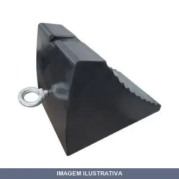
CALCO CUNHA BORRACHA 04.8KG
Calço cunha em borracha para fixação e nivelamento de estruturas e equipamentos. Material em borracha proporciona estabilidade e amortecimento. Aplicação em trabalhos de construção, montagem e ajustes diversos.
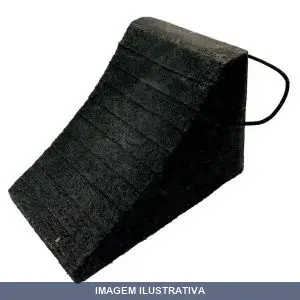
CALCO CUNHA BORRACHA 04.8KG [023853]
Calço cunha em borracha para fixação e nivelamento de cargas, móveis e estruturas. Resiste a impactos e compressão, mantendo estabilidade em superfícies irregulares. Ideal para uso em construção, marcenaria e aplicações gerais de encunhamento.
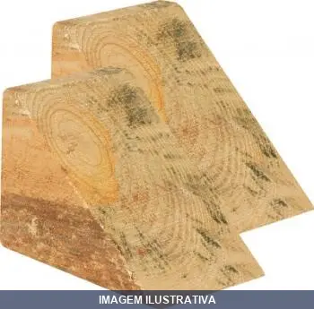
CALCO CUNHA MADEIRA PLASTCOR
Indicação de Uso: Travamento e nivelamento de rodas de caminhões, ônibus e carros. Apoio temporário em obras, reformas e operações de manutenção. Material e Resistência: Confeccionado em madeira maciça em formato de cunha, oferecendo durabilidade e resistência ao impacto. Vantagem Prática: Imobiliza o veículo com segurança durante operações em que o motor não pode ser desligado, prevenindo deslocamentos indesejados.
CALCO CUNHA POLIPROPILENO PLASTCOR
Calço cunha fabricado em polipropileno. Indicado para nivelamento, ajuste e travamento de estruturas, móveis e equipamentos. Material resistente e durável, adequado para uso em ambientes internos e externos. Prático para trabalhos de construção, reforma e manutenção geral.
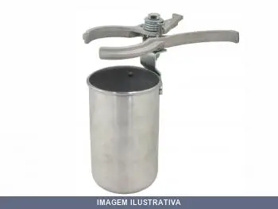
CANECO COM ALICATE MGN
Ferramenta manual combinada que integra caneco e alicate. Utilizado para trabalhos de hidráulica, encanamento e manutenção geral. O alicate possibilita apertar, soltar e manipular componentes, enquanto o caneco funciona como recipiente. Material: Alumínio. Oferece praticidade ao concentrar duas funções em uma única ferramenta.
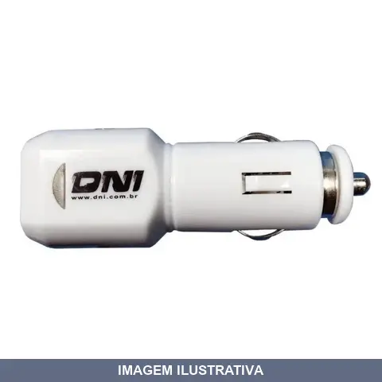
CARREGADOR AUTOMOTIVO USB / DNI
Indicação de Uso: Recarregar celulares, GPS e tablets em carros, caminhões e veículos com acendedor de cigarro. Material e Resistência: Tensão de entrada 12/24Vdc por conector de acendedor de cigarro; tensão de saída 5V/1A por duas portas USB; potência 5W; cor branca. Vantagem Prática: Duas saídas USB para carregar dois dispositivos simultâneos; led indicador de funcionamento; baixo consumo.
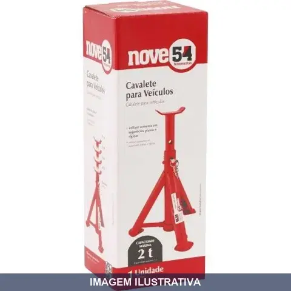
CAVALETE PARA VEICULO T NOVE54
Indicação de Uso: Suporte para elevação e sustentação de veículos durante manutenção, inspeção e reparos. Material e Resistência: Estrutura robusta dimensionada para carga de 2 toneladas. Vantagem Prática: Oferece estabilidade e segurança ao manter o veículo elevado durante trabalhos sob o chassis.
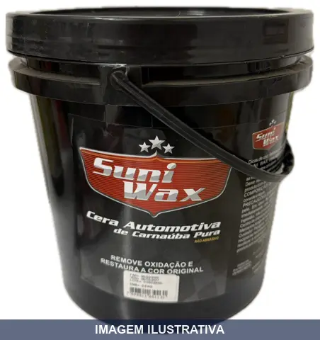
CERA AUTOMOTIVA CARNAUBA SUNI WAX SUNIEX 3,6 L
Cera automotiva à base de carnaúba para proteção e polimento de pintura veicular. Indicado para limpeza e proteção da carroceria de automóveis. Material: carnaúba. Aplicação em superfícies pintadas de veículos.
CERA AUTOMOTIVA CARNAUBA SUNI WAX SUNIEX 500ML
Cera automotiva à base de carnaúba para proteção e polimento de pintura de veículos. Proporciona acabamento brilhante e camada protetora contra agentes externos. Aplicação manual em superfícies limpas de automóveis.
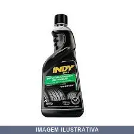
CERA LIQUIDA PRETITA LITRO START 0500
Indicação de Uso: Dar brilho e proteção em pneus, pisos, tapetes, vinil, capota marítima e artigos de borracha em geral. Material e Resistência: Cera líquida com alto teor de pigmento que confere tingimento uniforme. Protege contra riscos e desgaste, resiste à água, detergentes e tráfego. Forma camada protetora que evita ressecamento de materiais plásticos. Vantagem Prática: Aplicação fácil e secagem rápida. Biodegradável. Pronto para usar. Restaura brilho
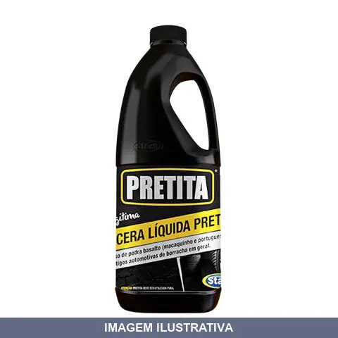
CERA LIQUIDA PRETITA LITRO START 2
Indicação de Uso: Dar brilho e proteção em pneus, pisos, tapetes, vinil, capota marítima e artigos de borracha em geral. Material e Resistência: Cera líquida com alto teor de pigmento que confere tingimento uniforme. Protege contra riscos e desgaste, resiste à água, detergentes e tráfego. Forma camada protetora que evita ressecamento de materiais plásticos. Vantagem Prática: Aplicação fácil e secagem rápida. Biodegradável. Pronto para usar. Restaura brilho
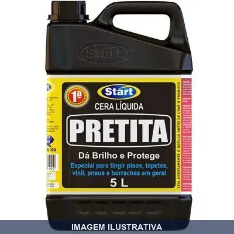
CERA LIQUIDA PRETITA LITRO START 5
Indicação de Uso: Dar brilho e proteção em pneus, pisos, tapetes, vinil, capota marítima e artigos de borracha em geral. Material e Resistência: Cera líquida com alto teor de pigmento que confere tingimento uniforme. Protege contra riscos e desgaste, resiste à água, detergentes e tráfego. Forma camada protetora que evita ressecamento de materiais plásticos. Vantagem Prática: Aplicação fácil e secagem rápida. Biodegradável. Pronto para usar. Restaura brilho
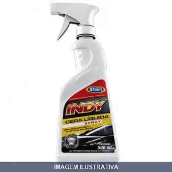
CERA LIQUIDA SPRAY INDY START
INDY CERA LIQUIDA SPRAY 500ML (CAIXA COM 6 UNIDADES) Brilho e proteção com fácil remoção.
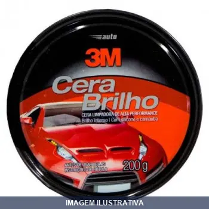
CERA PASTA BRILHO 3M
3M AUTO CERA BRILHO 200G PRINCIPAIS CARACTERÍSTICAS - Fácil aplicação e remoção - Cera limpadora - Proporciona brilho intenso e duradouro - Contém Silicone e Carnaúba - Para todos os tipos de pintura
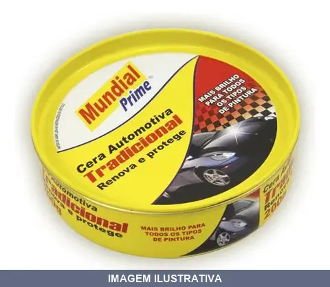
CERA PASTA BRILHO MUNDIAL PRIME
CERA AUTOMOTIVA 200G MUNDIAL PRIME Promove o brilho e proteção para todo o tipo de pintura. Permite uma simples e fácil aplicação. Protege contra as ações nocivas do calor, dos raios solares, de chuva e maresia, criando uma fina película de proteção.
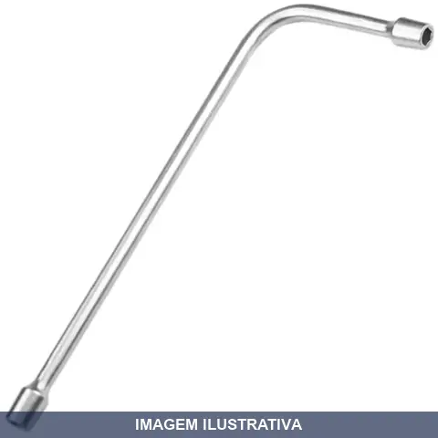
CHAVE BIELA LONGA LOTUS
Indicação de Uso: Ferramenta manual destinada ao aperto e desaperto de porcas e parafusos em trabalhos de manutenção, montagem e desmontagem em geral. Material e Resistência: Fabricada em aço, apropriada para uso contínuo em serviços de mecânica e hidráulica. Vantagem Prática: Design alongado permite acesso em espaços reduzidos e maior leverage no aperto de fixadores.

CHAVE BIELA PASSANTE GEDORE
Indicação de Uso: Apertar e afrouxar parafusos e porcas com comprimentos maiores, com auxílio de passador ou manípulo. Material e Resistência: Fabricada em aço especial com acabamento niquelado e cromado, oferecendo resistência e durabilidade. Vantagem Prática: Chave maciça com dois lados sextavados internos de mesma medida e furo passante no lado menor, permitindo a saída de parafusos com comprimentos maiores. Utilizável com passador ou com Manípulo ref. 26 D

CHAVE CANHAO MORETZ
Indicação de Uso: Chave canhão com soquete fechado, indicada para apertar e afrouxar porcas e parafusos em trabalhos de manutenção e montagem. Material e Resistência: Fabricada em aço, resistente para uso em aplicações mecânicas e hidráulicas. Vantagem Prática: Formato de canhão proporciona encaixe e reduz risco de escorregamento durante o uso.

CHAVE CANHAO VONDER
CHAVE CANHAO 09 MM CRV VONDER Indicada para apertar e soltar porcas e parafusos sextavados em locais de difícil acesso Possui acabamento cromado fosco que proporciona maior resistência contra oxidação/corrosão, além de cabo anatômico em polipropileno que garante maior conforto para o operador

CHAVE COMBINADA COM CATRACA PLANA GEDORE
Indicação de Uso: Aperto e afrouxamento de parafusos e porcas em diversos materiais. Material e Resistência: Aço cromo-vanádio com acabamento niquelado e cromado fosco acetinado. Perfil Unit Drive com encaixe escurecido. Mecanismo de catraca com funcionamento em uma das extremidades. Vantagem Prática: Permite execução de trabalhos com menor esforço, sem necessidade de retirada da chave para novo movimento de apertar e soltar. Ângulo de retorno de 5°.

CHAVE COMBINADA FLEX LOTUS
Indicação de Uso: Apertar e desapertar parafusos e porcas em diferentes aplicações e espaços restritos. Material e Resistência: Aço carbono forjado, 100% endurecido e temperado, cromada fosca com painel em baixo relevo. Vantagem Prática: Possui chave fixa em uma extremidade e abertura ajustável na outra, com clip para penduração.
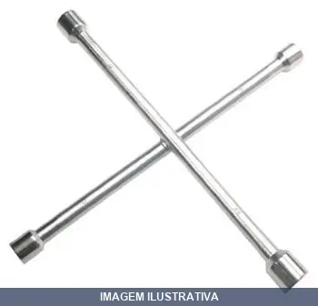
CHAVE CRUZ PROF E BOCAS PROF
Chave em cruz com 4 bocas profissional, indicada para afrouxar e apertar porcas e parafusos de diferentes tamanhos. Material em aço temperado com acabamento cromado, oferecendo durabilidade e resistência em trabalhos intensivos. Ideal para uso em manutenção veicular, industrial e hidráulica.
CHAVE ESTRELA ABERTA GEDORE
Chave de boca aberta, indicada para apertar e afrouxar porcas e parafusos em trabalhos de manutenção, montagem e desmontagem. Ferramenta manual de uso geral em mecânica, hidráulica e instalações. Material em aço, resistente ao desgaste e impactos do trabalho cotidiano.

CHAVE FILTRO CINTA 118MMX LUBEFER
Indicação de Uso: Extração e instalação de filtros de óleo em veículos. Material e Resistência: Chave com cinta regulável de corrente. Vantagem Prática: Ferramenta versátil para múltiplos tamanhos de filtros.

CHAVE FILTRO CORRENTE LUBEFER
Indicação de Uso: Ferramenta para remoção e instalação de filtros de óleo em motores e sistemas hidráulicos / Material e Resistência: Corpo em aço com corrente ajustável para diferentes diâmetros de filtro / Vantagem Prática: Permite aperto e desaperto seguro de filtros sem danificar a rosca, facilitando manutenção e troca de filtros.

CHAVE FIXA FLEX LOTUS
Indicação de Uso: Ferramenta manual para apertar e afrouxar porcas e parafusos em trabalhos de manutenção, montagem e desmontagem de componentes metálicos. Material e Resistência: Construída em aço carbono, oferece resistência para uso em aplicações gerais. Vantagem Prática: Design robusto e reto, com dupla boca fixa, ideal para trabalho com precisão em conexões metálicas.
CHAVE GRIFO CANO FLEX LOTUS
Indicação de Uso: Apertar e soltar porcas, canos e tubos em trabalhos de encanamento. Material e Resistência: Aço carbono forjado e temperado, com boca dentada, design sextavado próximo ao orifício da boca, modelo americano. Vantagem Prática: Chave ajustável tipo grifo, econômica, adequada para uso profissional e residencial.
CHAVE MANDRIL COM LADOS / - / - / - ROCAST
Indicação de Uso: Chave mandril para afrouxar e apertar fixadores em trabalhos de manutenção, montagem e desmontagem. Material e Resistência: Mandril de aço com capacidade de fixação em múltiplas bitolas. Vantagem Prática: Permite apertar e afrouxar mandris de diferentes bitolas (1/4, 5/16, 3/8, 1/2) em uma única ferramenta, reduzindo a necessidade de carregar várias chaves.
CHAVE MULTIDENTADA L GEDORE
Indicação de Uso: Chave destinada a apertar e afrouxar parafusos e porcas em diversos trabalhos de manutenção, montagem e desmontagem. Material e Resistência: Fabricada em aço, oferecendo resistência e durabilidade para uso repetido. Vantagem Prática: Seu design multidentado proporciona encaixe e preensão, reduzindo o risco de danificar as arestas dos elementos de fixação.
CHAVE PARA ESMERILHADEIRA LOTUS
Chave universal para esmerilhadeira e lixadeira. Compatível com pinos 4 1/2", 7" e 9" (discos 110 a 230 mm). Material: aço carbono. Dimensões: 190 mm de comprimento e 2,8 mm de espessura. Indicada para apertar e trocar discos.

CHAVE RODA CRUZ X PLUS LOTUS
Indicação de Uso: Remoção e instalação de porcas de roda em veículos. Material e Resistência: Construção em aço, adequada para trabalhos em rodas de automóveis. Vantagem Prática: Formato de cruz permite trabalho com múltiplos tamanhos de porcas em uma única ferramenta.
CHAVE RODA CRUZ X WAFT 14POL 17X19 21X23 6336
Indicação de Uso: Chave para remoção e instalação de rodas em veículos. Aplicável em manutenção e troca de pneus. Material e Resistência: Construção em aço, própria para uso em rodas de automóveis. Vantagem Prática: Formato cruz com múltiplos encaixes permite trabalhar com diferentes tamanhos de porcas na mesma ferramenta.
CHAVE RODA CRUZ X WAFT 17POL 17X19 23X13 16 6335
Chave de roda em formato de cruz indicada para apertar ou afrouxar porcas de rodas de automóveis. Fabricada em aço cromo-vanádio, oferece resistência e durabilidade. Possui múltiplos encaixes para utilização em diferentes tamanhos de porcas com olhal. Design em cruz proporciona maior alavancagem, facilitando o esforço necessário para soltar porcas apertadas.
CHAVE RODA CRUZ X21XESP PLUS LOTUS
Indicação de Uso: Chave para remoção e instalação de rodas de veículos automotores. Material e Resistência: Construção em aço, resistente a impactos e deformações durante o uso. Vantagem Prática: Formato de cruz com múltiplas medidas integradas, reduzindo necessidade de várias ferramentas para diferentes tamanhos de porcas.

CHAVE RODA CRUZ X21XESP WAFT
Ferramenta tipo cruz para manutenção de rodas de veículos leves. Possui quatro encaixes nas medidas especificadas para apertar e afrouxar porcas e parafusos de rodas. Fabricada em aço com elevada resistência estrutural. Comprimento nominal de 14 polegadas proporciona melhor alavanca e comodidade de manuseio.
CHAVE RODA PLUS LOTUS
Indicação de Uso: Ferramenta destinada ao aperto e desaperto de porcas de rodas em veículos automotores. Material e Resistência: Confeccionada em aço, estrutura robusta para trabalho em manutenção automotiva. Vantagem Prática: Dupla função de trabalho com dois tamanhos integrados, reduzindo necessidade de múltiplas ferramentas.
CHAVE RODA TIPO L NOVE54
CHAVE DE RODA L 17MM COM ESPATULA 954 REF:36.97.060.010 MARCA:NOVE54 Conteúdo da Embalagem: 1 Chave de roda tipo L Indicada para apertar e soltar porcas e parafusos sextavados Chave com encaixe sextavado interno em uma das extremidades e espátula na outra. Possui acabamento zincado que proporciona maior resistência à corrosão/oxidação. Material do corpo da chave:Aço carbono Acabamento da Chave:Zincado Medida da chave de roda:17 mm Comprimento da chave de roda:250,0 mm Altura da chave de roda:17
CHAVE RODA TIPO L PLUS LOTUS
Indicação de Uso: Utilizada para apertar e afrouxar porcas e parafusos de rodas. Ideal para retirada, desmontagem, montagem e colocação de pneus. Material e Resistência: Fabricada em aço carbono forjado e temperado. Chave de roda tipo L com perfil sextavado de um lado e espátula do outro.
CHAVE RODA TIPO L X COM ESPATULA KRAUSCHERT
Chave de roda tipo L com espátula simples, adequada para afrouxar e apertar porcas de rodas em veículos automotores. Ferramenta essencial para manutenção e troca de pneus em campo ou oficina.
CHAVE RODA URSO BRANCO
Chave de roda dupla para remover e apertar porcas de rodas de veículos. Formato reto, com ponta em cada extremidade, facilita o uso em diferentes medidas. Ideal para manutenção e troca de pneus em oficinas, borracharias e uso automotivo geral.
CHAVE TORX COMBINADA PLANA TX4-E14XE18 GEDORE
Indicação de Uso: Chave combinada dupla para apertar e remover parafusos Torx em locais de difícil acesso, com dois tamanhos integrados em uma única ferramenta. Material e Resistência: Fabricada em aço com acabamento niquelado e cromado, pontas polidas com perfil hexalobular. Vantagem Prática: Design dupla reduz necessidade de múltiplas ferramentas, permitindo maior praticidade no trabalho.
COLA FRIO BV VIPAL
CIMENTO VULCANIZ BV-02 ( 25ML / 18G) VIPAL Os cimentos vulcanizantes possuem resinas especiais que facilitam a aderência e aceleradores que asseguram a vulcanização dos manchões e reparos a frio. Aplicação - Na fixação de remendos a frio sobre câmaras de ar e manchões a frio sobre os internos de pneus.
CORDOALHA VEICULO PESADO PONTAS AMS
CORDOALHA VEICULOS PESADOS 2 PONTEIRAS 30 CM Utilizados em caminhões, ônibus, tratores, máquinas e implementos agrícolas para fazer conexão e o terra

CORRENTE PARA TAMPA DE PORT GABITEC
Corrente para fixação e retenção de tampa de porta. Utilizada em sistemas de fixação de tampas com anel de vedação, como em válvulas e registros sanitários. Proporciona abertura controlada e segurança contra fechamento brusco. Componente de reposição para manutenção de equipamentos com engate rápido.
DESCARBORIZANTE SPRAY SF MOTORFIX
Indicação de Uso: Limpeza e descarborização de motores, removendo depósitos de carbono em peças internas / Vantagem Prática: Apresentação em spray facilita aplicação direta, penetra rapidamente em componentes e reduz necessidade de desmontagem.
EMENDA FX F MGN
EMENDA DE 4'' X 4'' Emenda de 4'' x 4'' Projetada dentro dos parâmetros da norma MIL AA-59326, a emenda de 4'' x 4'' é utilizada para fazer a união das ponteiras de 4''. INFORMAÇÕES TÉCNICAS Material de Fabricação: Alumínio Compatibilidade de Produtos: Combustíveis Vedação Utilizada: Nitrílica Pressão de Teste: 300 PSL Peso: 1,900 kg Norma: MIL AA-59326
ENG FUNDIDO MOD KARMANGHIA ENGATCAR
ENGATE FUNDIDO 50 MM MOD KARMANGHIA CAPACIDADE DE CARGA 2400KG
ENG FUNDIDO TUBO REDONDO ENGATCAR
ENGATE FUNDIDO 50MM TUDO REDONDO CAPACIDADE DE CARGA 3300KG
ENGATE (FRENTE) DO JOELHO SELADO COM VISOR MGN
Engate frontal para joelho selado com visor. Componente de conexão utilizado em sistemas de descarga selada, oferecendo vedação segura. Indicação de Uso: Instalações hidráulicas e de combustíveis. Material e Resistência: Alumínio com vedação em nitrílica. Vantagem Prática: Visor integrado permite visualização e inspeção do sistema de vedação.
ENGATE DA VALVULA PORTINHOLA COMPLETO JOWEI
Indicação de Uso: Engate de conexão rápida para válvula portinhola em caminhões tanque e sistemas de descarga. Utilizado em Top Loading e Bottom Loading para descarga de combustíveis e produtos em pontos de abastecimento. Material e Resistência: Construído em alumínio, oferecendo resistência estrutural e leveza para operações de conexão e desconexão de mangueiras. Vantagem Prática: Possibilita conexão rápida e segura entre a mangueira e o ponto de descarga, minimizando vazamentos durante as
ENGATE DE TRAVAMENTO DA TAMPA DE VISITA MGN
Indicação de Uso: Dispositivo de travamento entre braço de fechamento e tampa de visita em caminhões-tanque MGN. Material e Resistência: Fabricado em latão para eliminar possibilidade de faisca durante manuseio. Vantagem Prática: Travamento seguro e confiável de tampas de inspeção/visita em operações com combustíveis e líquidos.

ENGATE FEMEA COM ESCAMA EFS-CR GABITEC
Indicação de Uso: Engate fêmea para conexão de mangueiras e tubulações em sistemas hidráulicos e pneumáticos. Material e Resistência: Construído em alumínio com acabamento natural, oferece boa resistência à corrosão. Vantagem Prática: Facilita acoplamento rápido e seguro de linhas de ar comprimido e fluidos sob pressão.
ENGATE FEMEA COM ESCAMA FS-C GABITEC
Engate rápido fêmea com escama para sistemas hidráulicos e pneumáticos. Indicação de Uso: transferência rápida e segura de fluidos em aplicações de carga, descarga e irrigação. Material e Resistência: construído em liga de alumínio, adequado para água e líquidos compatíveis. Vantagem Prática: conexão segura com vedação por escama, facilitando acoplamentos e desacoplamentos frequentes.
ENGATE FEMEA ROSCA EXTERNA FE-B GABITEC
ENGATE RAPIDO B 1 ROSCA BSP FE - B (ENGATE FÊMEA ROSCA EXTERNA) Descrição: Engates Rápidos Fabricados em Liga Especial de Alumínio de Alta Resistência, usinados em máquinas computadorizadas, atendendo à norma AA-59326, o que garante estanqueidade e intercambiabilidade. É fornecida normalmente com Rosca NPT (NBR 12912 / ANSI/ASME B 1.20.1), mas pode ser confeccionados com Rosca BSP (NBR 6414 / ISO 7-1), mediante prévia solicitação. Indicação: para transferência rápida, limpa e segura em carga e
ENGATE FEMEA ROSCA INTERNA FI-D GABITEC
FI - D (ENGATE FÊMEA ROSCA INTERNA) Descrição: Engates Rápidos Fabricados em Liga Especial de Alumínio de Alta Resistência, usinados em máquinas computadorizadas, atendendo à norma AA-59326, o que garante estanqueidade e intercambiabilidade. É fornecida normalmente com Rosca NPT (NBR 12912 / ANSI/ASME B 1.20.1), mas pode ser confeccionados com Rosca BSP (NBR 6414 / ISO 7-1), mediante prévia solicitação. Indicação: para transferência rápida, limpa e segura em carga e descarga de produtos líquid

ENGATE MACHO COM ESCAMA EMS-E GABITEC
Engate macho com escama para conexão rápida e segura de sistemas hidráulicos e pneumáticos. Fabricado em liga de alumínio usinado, garante estanqueidade e intercambiabilidade. Indicação de Uso: transferência de fluidos em aplicações de irrigação, produtos químicos e líquidos diversos. Vantagem Prática: conexão limpa e desmontagem rápida sem derramamento.
ENGATE MACHO COM ESCAMA EMS-ER GABITEC
EMS-ER 4 X 2 - ENGATE RAPIDO MS-E DE REDUÇÃO 4 X 2 COM ESCAMA ADAPTADOR REDUÇÃO 4 X 2 ALUMINIO

ENGATE MACHO COM ESCAMA MS-E GABITEC
Engate rápido macho com escama para conexão e desconexão de mangueiras hidráulicas e pneumáticas. Fabricado em alumínio usinado, oferece vedação segura para transferência de fluidos em sistemas de pressão. Indicação de Uso: acoplamento de linhas de ar comprimido, sistemas hidráulicos e aplicações pneumáticas em equipamentos industriais. Vantagem Prática: conexão rápida e limpa que reduz perdas de fluido e facilita montagem e desmontagem de circuitos.
ENGATE MACHO COM ESCAMA MS-ER GABITEC
ENGATE RAPIDO MS-E DE RED 3X2 C/ ESCAMA MS - ER (ENGATE MACHO COM ESCAMA DE REDUÇÃO) Descrição: Permite acoplar a uma extremidade uma mangueira/mangote com medida menor que da outra extremidade. Exemplo de aplicação: descarga de um caminhão tanque com bocal de saída com rosca interna de 4” para um reservatório de combustível através de uma mangueira de 2” – no bocal utiliza-se um ME – F 4” e na mangueira um FS – C R 4 X 2”.
ENGATE MACHO COM ESCAMA PR-D GABITEC
Engate macho com sistema de escama para conexão rápida em mangueiras hidráulicas e pneumáticas. Indicação de Uso: Acoplamento de mangueiras em sistemas de ar comprimido, água e fluidos hidráulicos. Material e Resistência: Metal com mecanismo de escama para travamento seguro. Vantagem Prática: Facilita conexões e desconexões rápidas sem vazamentos.
ENGATE MACHO COM ESCAMA X MS-E GABITEC
EMS - E 2.1/2 ENGATE RAPIDO E 2.1/2 COM ESCAMA MS - E (ENGATE MACHO COM ESCAMA) Descrição: Fabricado em Liga Especial de Alumínio de Alta Resistência, usinado em máquinas computadorizadas, atendendo à norma AA-59326, o que garante estanqueidade e intercambiabilidade. Indicação: para transferência rápida, limpa e segura em carga e descarga de produtos líquidos tais como: Água, Leite, Destilados, Aguardentes, Irrigação, Produtos Químicos, Solventes, Petróleo, Querosene, Granulados, Pós etc. Tempe
ENGATE MACHO COM ESCAMA X2. EMS-ER GABITEC
EMS-ER 2.1/2 X 2 - ENGATE RAPIDO MS-E DE REDUÇÃO 2.1/2 X 2 COM ESCAMA
ENGATE MACHO ROSCA EXTERNA ME-F GABITEC
Engate rápido macho com rosca externa BSP. Usinado em liga especial de alumínio de alta resistência conforme norma AA-59326, garantindo estanqueidade e intercambiabilidade. Indicação de Uso: conexões rápidas em sistemas pneumáticos e hidráulicos. Vantagem Prática: facilita acoplamento e desacoplamento sem necessidade de ferramentas.
ENGATE MACHO ROSCA INTERNA MI-A GABITEC
Engate rápido macho com rosca interna. Usinado em liga de alumínio de alta resistência, atende à norma AA-59326, garantindo estanqueidade e intercambiabilidade. Fornecido com rosca NPT (NBR 12912/ANSI ASME B 1.20.1), podendo ser confeccionado com rosca BSP (NBR 6414/ISO 7-1) sob encomenda. Indicado para conexão rápida em linhas pneumáticas e hidráulicas.
ENGATE TAMPAO FEMEA EFT-DC GABITEC
Engate rápido tipo tampão fêmea para sistemas hidráulicos e pneumáticos. Facilita conexão e desconexão de mangueiras e tubulações sem perda de fluido. Aplicável em equipamentos que utilizam acopladores de engate rápido.
ENGATE TAMPAO MACHO MT-DP GABITEC
Engate rápido tipo tampão macho para sistemas hidráulicos e pneumáticos. Fabricado em liga de alumínio usinado, garante estanqueidade e intercambiabilidade. Indicação de Uso: transferência rápida e segura de fluidos em operações de carga e descarga (água, leite, destilados, produtos químicos, solventes, petróleo e irrigação). Vantagem Prática: conexão e desconexão sem vazamento, ideal para aplicações que exigem rapidez e limpeza.
FILTRO DE AR
Filtro de ar para sistemas pneumáticos. Indicação de Uso: Filtragem de ar comprimido em equipamentos e ferramentas de ar. Material e Resistência: Copo transparente sem proteção externa, permite visualização do nível de condensação. Vantagem Prática: Fácil inspeção e limpeza do elemento filtrante.
FLUIDO ANTICORROSIVO RL10016-13B1 LITRO DELPHI
Fluido anticorrosivo orgânico para proteção e preservação de superfícies metálicas contra oxidação e ferrugem. Indicado para uso no sistema de arrefecimento de veículos, protegendo o radiador e componentes metálicos do motor contra corrosão e incrustação. Pronto para uso, protege contra umidade e agentes corrosivos.
FLUIDO DE FREIO DOT4 MOTORFIX
Indicação de Uso: Fluido para sistemas de freio em veículos que utilizam especificação DOT4. / Material e Resistência: Fluido sintético de alta performance, resistente a altas temperaturas e com ponto de ebulição elevado. / Vantagem Prática: Garante frenagem segura e eficiente, compatível com sistemas de freio hidráulico convencionais.
FUNIL ALUMINIO CAMINHAO/TRATOR COM TELA LUBEFER
Funil com tela para caminhão e trator. Indicação de Uso: transferência de combustível e lubrificantes em veículos pesados. Material e Resistência: alumínio com tela filtrante integrada para retenção de impurezas. Vantagem Prática: facilita abastecimento seguro e previne contaminação do sistema de alimentação.
FUNIL ALUMINIO KOMBI LUBEFER
Funil em alumínio com tubo longo curvado, desenvolvido para transferência de óleos e líquidos em veículos tipo Kombi. O alumínio oferece leveza e resistência à corrosão, facilitando o manuseio e prolongando a vida útil do produto.
FUNIL ALUMINIO USO GERAL PEQUENO DUAS CURVAS PARA MOTO LUBEFER
Funil de alumínio com duas curvas, indicado para uso geral em motocicletas. Material: alumínio. Facilita o abastecimento e transferência de fluídos com maior precisão e menos derramamento.
GANCHO DA TAMPA COMPLETO JOWEI
Gancho completo para tampa, componente de fixação e vedação. Indicado para selar e prender tampas em recipientes, caixas e compartimentos. Fabricado em metal resistente. Facilita o fechamento seguro de tampas em aplicações diversas.
GARRA BATERIA 010A PRETA INTERNEED
GARRA JACARE CLIP 10A PEQUENA PR ENC 012634 COD INTERNEED 014201 COD MATSU

GARRA BATERIA 010A VERMELHA INTERNEED
GARRA JACARE CLIP 10A PEQUENO VERMELHO GR C/ 10 PEÇAS 014218 PEQUENA

GARRA BATERIA 050A PRETA INTERNEED
Garra para bateria com capacidade de 050A, utilizada para conexão e desconexão de cabos em sistemas elétricos de veículos e equipamentos. Indicação de Uso: Trabalhos em eletricidade automotiva e industrial. Material e Resistência: Construção em metal com cabo emborrachado preto, suporta até 050A. Vantagem Prática: Encaixe seguro e rápido em terminais de bateria, facilitando manutenção e instalação elétrica.

GARRA BATERIA 050A VERMELHA INTERNEED
Indicação de Uso: Conexão elétrica em baterias de veículos, sistemas automotivos e equipamentos de teste. Material e Resistência: Terminais com acabamento em metal niquelado, resistente e durável. Vantagem Prática: Cor vermelha facilita a identificação da polaridade durante conexões.

GARRA BATERIA 100A PRETA INTERNEED
014249 GARRA JACARE CLIP 100A GRANDE PRETA ENCARTELADO

GARRA BATERIA 100A VERMELHA INTERNEED
Indicação de Uso: Conexão elétrica em baterias de veículos, sistemas automotivos e equipamentos de teste. Material e Resistência: Terminais com acabamento em metal niquelado, resistente e durável. Vantagem Prática: Cor vermelha facilita a identificação da polaridade durante conexões.

GARRA BATERIA 200A PRETA INTERNEED
GARRA DE BATERIA PARA CABO CHUPETA 200A PRETA GRANDE

GARRA BATERIA 200A VERMELHA INTERNEED
GARRA DE BATERIA PARA CABO CHUPETA 200A VERMELHO GRANDE

GARRA BATERIA 300A PAR PLUS LOTUS
Indicação de Uso: Garra tipo jacaré para recarga em baterias automotivas, par formado por uma garra vermelha (positiva) e uma preta (negativa). Material e Resistência: Metal cobreado com proteção emborrachada em silicone, linha Plus de construção super resistente. Vantagem Prática: Garras de alta capacidade de corrente, design ergométrico com mola forte para fixação segura.

GARRA BATERIA 500A VERMELHA UEDA
GARRA 500A COM MANOPLA COM 1 PEÇA VERMELHO REF: 9052
GARRA BATERIA 600A PAR PLUS LOTUS
Indicação de Uso: Garra tipo jacaré para recarga em baterias automotivas, par formado por uma garra vermelha (positiva) e uma preta (negativa). Material e Resistência: Metal cobreado com proteção emborrachada em silicone, linha Plus de construção super resistente. Vantagem Prática: Garras de alta capacidade de corrente, design ergométrico com mola forte para fixação segura.
GARRA BATERIA PENDENTE INTERNEED
Garra para bateria com suporte pendente. Indicada para conexão e fixação de cabos em baterias automotivas. Material em metal com revestimento apropriado para condutividade elétrica. Vantagem prática: instalação rápida e conexão segura do circuito elétrico.

GARRA BATERIA PRETA MEDIA INTERNEED
Indicação de Uso: Garra para bateria de automóvel, ideal para conexão e desconexão rápida de cabos em sistemas elétricos de veículos. Material e Resistência: Corpo metálico resistente com cabo/pegador emborrachado preto, resistente a corrosão. Vantagem Prática: Facilita a conexão segura e rápida de cabos de bateria.

GARRA BATERIA REF: PRETA UEDA
Garra para bateria com capacidade de 500A, adequada para conexão e desconexão de terminais em baterias automotivas. Revestimento em material plástico na cor preta. Aplicação em manutenção veicular e sistemas elétricos com baterias.
GARRA BATERIA VERMELHA MEDIA INTERNEED
014232 GARRA JACARE CLIP 10A MEDIA VERMELHA ENCARTELADO
GARRA NEGATIVA BRO ELITE
Indicação de Uso: Garra negativa para conexão em baterias e sistemas elétricos de veículos e equipamentos. Material e Resistência: Construída para suportar até 500A de corrente. Vantagem Prática: Conexão segura e rápida em terminais negativos de bateria.
GROUD BOLT MGN
Parafuso de ancoragem tipo ground bolt, utilizado em fixação estrutural e aterramento elétrico. Material em aço galvanizado, oferece resistência à corrosão e durabilidade. Indicado para instalações elétricas, estruturas metálicas e sistemas de proteção contra surtos.
HIDRATANTE PARA COURO GEL CONCENTRATO MEN CENTRALSUL
Indicação de Uso: Bancos de couro, estofados, cadeiras, sapatos, bolsas, carteiras e outras peças de couro natural ou sintético. Não indicado para camurça, couro rasgado ou quebradiço. Modo de Uso: Diluir o gel concentrado em água conforme necessidade de aplicação, aplicar com pano macio e deixar secar naturalmente. Vantagem Prática: Hidratante em gel concentrado que devolve brilho original, oferece proteção UV e aumenta a vida útil do couro sem deixá-lo escorregadio.
INSERTO PARA PNEU CAM E ONIBUS STS- RF
Indicação de Uso: Reparo e vedação de câmaras de ar de pneus para veículos comerciais como caminhões e ônibus. / Material e Resistência: Borracha vulcanizada resistente a pressão e abrasão. / Vantagem Prática: Permite reparo rápido e temporário de furos, estendendo a vida útil da câmara sem necessidade de substituição imediata.
JOELHO DE DESC SEL JOWEI
Indicação de Uso: Conexão em ângulo para sistemas hidráulicos e pneumáticos, instalação em tubulações e mangueiras de alta pressão. Material e Resistência: Corpo em alumínio fundido com vedação em nitrílica, adequado para trabalho sob pressão. Vantagem Prática: Facilita mudança de direção em linhas de transmissão de fluidos com segurança e vedação confiável.
JOELHO DE DESC SEL MGN
Joelho de descarga selada com engate rápido. Indicação de Uso: Conexão entre tanques e mangotes em sistemas de descarregamento hidráulico. Material e Resistência: Alumínio com vedação em nitrílica, adequado para fluidos hidráulicos. Vantagem Prática: Engate prático que facilita conexões e desconexões rápidas em operações de transferência de fluidos.
JOGO REPARO PNEUS WORKER
Indicação de Uso: Reparo de furos causados por prego ou parafuso na banda de rolamento de pneus radiais sem câmara (tubeless). Material e Resistência: Tampões autovulcanizáveis que resistem às cintas de aço. Cabo T e ferramenta de raspagem. Kit contém 6 tampões, 1 cabo T para inserção de agulha e 1 ferramenta de raspagem. Vantagem Prática: Alças em estrutura de T para maior comodidade. Permite reparos emergenciais. Adequado para veículos leves e utilitários.
KIT AUTOMOTIVO LIMPEZA PINHEIRO
Indicação de Uso: Limpeza completa de veículos. Contém lava-auto, limpa pneus, cera, silicone e acessórios para limpeza e proteção automotiva. Material e Resistência: Composto por seis peças: shampoo automotivo 500ml, cera, limpa vidros, limpa pneus 500ml, silicone 100ml, duas esponjas e flanela. Vantagem Prática: Solução completa para manutenção do veículo com produtos específicos para diferentes superfícies e acabamentos.
KIT BORRACHEIRO COM WETERN
Kit completo para trabalhos de borracharia com 60 peças sortidas. Indicado para reparos, vedação e manutenção de pneus e câmaras de ar. Material em borracha e componentes complementares. Conjunto prático que reúne ferramentas e acessórios essenciais para o profissional de borracharia.
LIMPA AR CONDIC CARRO NOVO AUTO FAST
Indicação de Uso: Limpeza de sistemas de ar condicionado em automóveis, caminhões, ônibus e aparelhos de ar condicionado de uso doméstico. Material e Resistência: Produto não inflamável. Apresenta propriedades bactericida e fungicida. Vantagem Prática: Limpa, higieniza e perfuma o sistema de ar condicionado com aroma agradável.

LIMPA AR CONDIC LAVANDA AUTO FAST
Limpador de ar-condicionado em spray para automóveis, caminhões, ônibus e ambientes domésticos. Elimina microrganismos, mofo e bactérias do sistema. Fragrância de Lavanda. Aplicação fácil e segura, não inflamável.
LIMPA COURO E HIDRATA GT2000
Indicação de Uso: Limpeza e hidratação de artigos em couro, como bolsas, jaquetas, sapatos e acessórios. / Material e Resistência: Produto em aerossol, formulado para couro natural e sintético. / Vantagem Prática: Remove sujeira e restaura a hidratação do couro, prolongando sua durabilidade e aparência.
LIMPA VIDROS VISAO TECBRIL
LIMPA VIDROS VISAO ANTIEMBACANTE REMOVE RESIDUOS DE FULIGEM
MANCHAO PARA PNEU VFD5/ / LONAS VIPAL
MANCHÃO VD 05 A FRIO CAIXA COM 10 UNIDADES Destinam-se ao conserto de pneus diagonais para danos na banda de rodagem e nos ombros

MANCHAO PARA PNEU VFD6/ / LONAS VIPAL
MANCHÃO VD 06 A FRIO CAIXA COM 10 UNIDADES Destinam-se ao conserto de pneus diagonais para danos na banda de rodagem e nos ombros

MARTINELLI CONEXAO FIXA ALUMINIO REUTILIZAVEL
Conexão fixa de alumínio reutilizável. Indicação de Uso: sistemas hidráulicos e pneumáticos. Material e Resistência: alumínio. Vantagem Prática: permite múltiplos reaproveitamentos em instalações e reparos.

MARTINELLI CONEXAO GIRATORIA ALUMINIO REUTILIZAVEL
Indicação de Uso: Instalação entre mangueira e bocal de abastecimento, reduzindo tensão e permitindo maior mobilidade do conjunto. Material e Resistência: Fabricada em alumínio resistente com tecnologia giratória modelo Z que permite giro de 360°. Vantagem Prática: Prolonga a vida útil da mangueira ao reduzir torções e desgastes, facilitando o manuseio durante operações de abastecimento.
MARTINELLI CONEXAO GIRATORIA ARTICULADA Z
Indicação de Uso: Conexão hidráulica ou pneumática em sistemas que requerem articulação e flexibilidade de direção. Material e Resistência: Construção em metal, adequada para aplicações industriais e prediais. Vantagem Prática: Design giratório e articulado permite ajustes angulares sem necessidade de peças adicionais.
MARTINELLI TAMPA DESCARGA SELADA ALUMINIO
Indicação de Uso: Instalada na extremidade superior do tubo de descarga de tanques de armazenamento de combustíveis. Evita a entrada de água, poeira e detritos que possam contaminar o combustível. Material e Resistência: Corpo fabricado em alumínio com conjunto de fixação em aço inoxidável. Apresenta alta resistência à ferrugem e oxidação. Fabricada conforme norma NBR 15138. Vantagem Prática: Sistema de alavanca de segurança com pinos de aço inoxidável que distribui a pressão uniformemente,
MEDIDOR MECANICO DIGITOS RF17
ROSCA FEMEA 1 BSP POL---VAZAO 19 A 76 LTS POR MINUTO--Somente Óleo
MOLA PARA VALVULA DE FUNDOS JOWEI
Mola para válvula de fundos. Componente de reposição destinado a sistemas de válvulas, garantindo o funcionamento adequado do mecanismo de acionamento e retorno. Fabricada em metal resistente à corrosão. Aplicável em instalações hidráulicas, pneumáticas e sistemas de drenagem.

NIPLE DUPLO ALUMINIO ND GABITEC
ND 1.1/2 - NIPLE DUPLO 1.1/2 NIPLES DUPLOS Descrição: Nos Niples Duplos, ambas as extremidades possuem rosca externa. A precisão das roscas proporciona excelente estanqueidade; as paredes são dimensionadas para garantir alta resistência com a mínima perda de carga; a matéria prima empregada resiste à ação química de uma ampla gama de materiais; o baixo peso facilita o manuseio e a montagem das peças. Aplicações: em instalações de água industriais, residenciais, agrícolas; para a ligação de
NIPLE DUPLO ALUMINIO ND3 GABITEC
NIPLES DUPLO 3'' Nos Niples Duplos, ambas as extremidades possuem rosca externa. A precisão das roscas proporciona excelente estanqueidade; as paredes são dimensionadas para garantir alta resistência com a mínima perda de carga; a matéria prima empregada resiste à ação química de uma ampla gama de materiais; o baixo peso facilita o manuseio e a montagem das peças. Aplicações: em instalações de água industriais, residenciais, agrícolas; para a ligação de tubos, válvulas, bombas, mangotes e
ODORIZANTE GEL CARRO NOVO
Indicação de Uso: Odorizante em gel para ambientes internos de veículos, proporcionando aroma de carro novo. / Material e Resistência: Gel aromático de longa duração. / Vantagem Prática: Perfuma o interior do carro mantendo o aroma característico de novo por período prolongado.
ODORIZANTE GEL TUTTI FRUTI
Odorizante em gel com aroma Tutti Fruti para ambientes. Indicação de Uso: Desodorização e aromatização de espaços internos. Material e Resistência: Gel concentrado de longa duração. Vantagem Prática: Elimina odores e perfuma o ambiente de forma contínua.
ODORIZANTE LIQUIDO TUTTI-FRUTTI CITRICO GT2000
Indicação de Uso: Odorizante para ambientes internos de veículos, eliminando odores e proporcionando aroma cítrico e frutado. / Material e Resistência: Líquido aromático em embalagem segura. / Vantagem Prática: Fragrância duradoura que mantém o interior do automóvel fresco e agradável.
OLEO CAMBIO ENGRENAGE GEAR GL- LITRO MOTOFIX
Indicação de Uso: Lubrificante para câmbio e sistemas de engrenagens de veículos. Material e Resistência: Óleo mineral formulado com aditivos GL-4 para proteção contra desgaste e corrosão em componentes de transmissão. Vantagem Prática: Mantém o funcionamento suave do câmbio e prolonga a vida útil das engrenagens.
OLEO DIFERENCIAL CAMBIO SAE GL- LITRO LUBRAX
Óleo mineral para lubrificação de diferenciais e caixas de câmbio. Classificação SAE 90 com índice de viscosidade adequado para transmissões automotivas. Fórmula GL-5 com aditivos antidesgaste. Uso em sistemas de transmissão de veículos que exigem esse tipo de lubrificante.
OLEO MOTOR DIESEL TOP TURBO 15W40 LITRO LUBRAX
Indicação de Uso: Lubrificação de motores diesel com tecnologia turbo. Material e Resistência: Óleo mineral com viscosidade 15W40, adequado para variações de temperatura. Vantagem Prática: Reduz desgaste do motor e facilita partidas em diferentes condições climáticas.

OLEO MOTOR LITRO GASOLINA 20W50 ESSENCIAL LUBRAX
Lubrificante mineral multiviscoso para motores a gasolina, etanol, flex e GNV com nível de desempenho API SL. Oferece proteção contra borras e depósitos mesmo em altas temperaturas, reduz desgaste e corrosão das partes lubrificadas. Possui elevada resistência à oxidação e estabilidade térmica. Desempenho em qualquer temperatura com partidas rápidas.

OLEO MOTOR T 10W30 LITRO PROFIS.SL LUBRAX
Indicação de Uso: Óleo lubrificante para motores de quatro tempos, aplicável em pequenos motores a gasolina como cortadores de grama, roçadeiras, geradores e equipamentos similares. Material e Resistência: Óleo mineral com viscosidade 10W30, formulado para proteger o motor em diferentes temperaturas de operação. Vantagem Prática: Reduz desgaste das peças internas do motor e facilita o funcionamento em condições variadas de uso.
OLEO MOTOR T 10W30 LITRO SEMI-SINTETICO LUBRAX
Óleo lubrificante multiviscoso semissintético para motores quatro tempos de alta rotação em motocicletas. Contém Titanium Technology que reduz o atrito e proporciona proteção em regiões críticas do motor. Atende aos níveis de desempenho API SL e JASO MA, assegurando adequada lubrificação do motor em partidas a frio e proteção contra formação de verniz e borras.
OLEO MOTOR T 20W50 LITRO MINERAL LUBRAX
Indicação de Uso: Óleo lubrificante mineral multiviscoso para motores quatro tempos de motocicletas e veículos em geral que exigem viscosidade 20W-50. Atende especificações API SL e JASO MA. Material e Resistência: Formulação mineral com aditivos que controlam depósitos e reduzem desgaste e corrosão das partes lubrificadas. Oferece estabilidade térmica e proteção em diversas temperaturas. Vantagem Prática: Lubrifica motor, transmissão e embreagem em um único produto. Permite partidas rápidas
OLEO MOTOR T MINERAL DT LUBRAX 2 200ML 30
Óleo lubrificante mineral para motores dois tempos a gasolina refrigerados a ar. Atende ao nível de desempenho API TC. Controla a formação de depósitos e reduz desgaste e corrosão das partes internas. Indicado para motosserras, ciclomotores, cortadores de grama e motocicletas. Deve ser misturado ao combustível conforme recomendação do fabricante do equipamento.
OLEO MOTOR T MINERAL DT LUBRAX 2 500ML 30
Óleo lubrificante mineral para motores dois tempos a gasolina refrigerados a ar. Atende ao nível de desempenho API TC. Controla a formação de depósitos e reduz desgaste e corrosão das partes internas. Indicado para motosserras, ciclomotores, cortadores de grama e motocicletas. Deve ser misturado ao combustível conforme recomendação do fabricante do equipamento.
OLEO PROTETOR SUPER DE CHASSIS LITRO IPIRANGA
IPIRANGA PROTETOR SUPER DE CHASSIS 1 LITRO Óleo Lubrificante protetivo indicado para pulverização em chassis de veículos automotivos. Confere excelente proteção, mesmo em regiões litorâneas. Deve ser aplicado ao chassis sem diluição. Óleo lubrificante protetivo para pulverização em chassis de automóveis, caminhões, ônibus, equipamentos agrícolas e de terraplanagem.
OLEO TRANSMISSAO ATF TIPO A 0500ML
LUBRIOIL ATF TIPO A 40 X 500 ML Descrição: Óleo lubrificante mineral, recomendado para sistemas de direção hidráulica e transmissões automáticas de veículos de passeio, caminhões e ônibus, e outros equipamentos que necessitem de um lubrificante com estas características e classificação. Formulado com óleos minerais selecionados e aditivos antidesgaste, antioxidante, anticorrosivo, detergente e dispersante. Classificação: Tipo A
OLEO TRANSMISSAO ATF TIPO A 1000ML
Indicação de Uso: Transmissões automáticas, sistemas hidráulicos de direção e garfos telescópicos de motocicletas. Material e Resistência: Fluido hidráulico mineral com classificação GM ATF Tipo A. Mantém viscosidade estável em ampla faixa de temperaturas e apresenta estabilidade ao cisalhamento. Vantagem Prática: Protege contra desgaste, controla o atrito em componentes de transmissão e oferece estabilidade para vedações e elastômeros sintéticos.
PINO (CAME DIREITO E ESQUERDO 6B) ACOPLADOR JOWEI
Indicação de Uso: Pino acoplador para conectores elétricos, aplicado em painéis de controle e instalações elétricas que demandem conexão direcional. Apresenta versões direita e esquerda para montagem específica. Material e Resistência: Aço carbono com acabamento zincado. Vantagem Prática: Facilita conexões direcionadas e padronizadas, reduzindo erros de montagem em circuitos elétricos.
PLACA 30X40 23-1075 PLASTCOR
Placa de sinalização numerada 23-1075, usada para identificação de risco no transporte de produtos perigosos (GLP), conforme simbologia ONU, de uso obrigatório em veículos de carga. Material e Resistência: plástico resistente. Vantagem Prática: facilita a identificação do produto transportado e o cumprimento das exigências legais.
PLACA 30X40 23-1971 PLASTCOR
Placa em material plástico, adequada para sinalização, identificação e proteção em ambientes internos e externos. Material resistente à umidade e intempéries. Aplicável em avisos, placas de identificação e demarcação de áreas.
PLACA 30X40 25-1072 PLASTCOR
Placa de sinalização em material plástico (PVC). Indicada para sinalização, identificação e avisos em ambientes internos e externos. Material resistente e durável, adequado para uso em estabelecimentos comerciais, industriais e residenciais.
PLACA 30X40 30-1202 PLASTCOR
Placa de sinalização de risco (número de risco 30 / ONU 1202) em plástico com proteção UV, para identificação de produtos perigosos em transporte. Material e Resistência: plástico resistente a raios ultravioleta. Vantagem Prática: durabilidade e legibilidade em condições climáticas diversas.
PLACA 30X40 30-1288 SEGMENTO
Placa de sinalização para uso em ambientes internos e externos. Material resistente à intempérie, adequada para identificação de segurança e informação em áreas comerciais e industriais. Facilita a comunicação visual de avisos e orientações.
PLACA 30X40 30-1866 PLASTCOR
Placa confeccionada em material plástico, resistente e durável. Indicada para uso em sinalização, identificação, proteção de superfícies e aplicações gerais em ambientes internos e externos. Material resistente a impactos e intempéries, facilita limpeza e manutenção.
PLACA 30X40 30-1999 SEGMENTO
Placa de sinalização de segurança. Indicação de Uso: alertar sobre riscos e normatizar áreas de trabalho / Material e Resistência: resistente a intempéries / Vantagem Prática: fácil visualização e conformidade com regulamentações de segurança.
PLACA 30X40 33-1170 PLASTCOR
Placa de identificação numerada em plástico corrugado. Indicação de Uso: sinalização, identificação e organização em ambientes comerciais, industriais e residenciais. Material e Resistência: plástico corrugado resistente a intempéries e manuseio. Vantagem Prática: fácil fixação e leitura clara dos números.
PLACA 30X40 33-1203 PLASTCOR
Placa de sinalização numerada para identificação de risco no transporte de produtos perigosos. Indicação de Uso: identificação do número de risco 33 e número ONU 1203, utilizada em veículos de transporte de cargas. Material e Resistência: plástico resistente. Vantagem Prática: fácil leitura, fixação simples e durabilidade.
PLACA 30X40 33-1208 SEGMENTO
Placa de sinalização e segmentação para identificação e demarcação de áreas. Aplicável em ambientes internos e externos para orientação, advertência e organização de espaços. Material resistente adequado para uso em estabelecimentos comerciais, industriais e públicos.
PLACA 30X40 33-1263 SEGMENTO
Placa de sinalização numerológica para identificação e organização. Indicação de Uso: Placa de identificação de risco (número ONU) para veículos de transporte de produtos perigosos. Material e Resistência: Confeccionada em material resistente adequado para uso em diversos ambientes. Vantagem Prática: Facilita localização e identificação clara de espaços.
PLACA 30X40 33-1863 SEGMENTO
Placa de sinalização de risco (painel de segurança ADR), código 33-1863, para identificação de produtos perigosos no transporte. Indicação de Uso: veículos de transporte de cargas perigosas. Material e Resistência: fabricada em material resistente. Vantagem Prática: facilita a identificação do risco e do produto transportado com clareza visual.
PLACA 30X40 33-3295 SEGMENTO
Placa de sinalização destinada a avisos, identificação e orientação em ambientes diversos. Adequada para uso interno e externo em áreas que demandem comunicação visual clara e duradoura. Material resistente à intempérie e manipulação. Fixação simples em superfícies variadas.
PLACA 30X40 33-3475 PLASTCOR
Placa de sinalização de risco (ADR) para transporte de produtos perigosos, código 33-3475, em plástico resistente. Indicação de Uso: identificação de veículos e embalagens conforme regulamentação de transporte. Material e Resistência: confeccionada em plástico durável. Vantagem Prática: fácil instalação e limpeza.
PLACA 30X40 60-2902 PLASTCOR
Indicação de Uso: Placa para sinalização, identificação e demarcação em ambientes internos e externos. Material e Resistência: Fabricada em plástico corrugado, oferece leveza e resistência à umidade. Vantagem Prática: Fácil instalação e fixação em diferentes superfícies.
PLACA 30X40 80-1760 SEGMENTO
Placa de sinalização ou identificação para uso em ambientes internos e externos. Estrutura em material resistente adequada para afixação em paredes, painéis ou estruturas. Aplicação típica em segmentos comercial, industrial ou residencial para demarcação, advertência ou orientação.
PLACA 30X40 80-1824 SEGMENTO
Placa de identificação numerada para sinalização em transporte de produtos perigosos, com número de risco 80 e número ONU 1824. Indicação de Uso: Sinalização de veículos conforme regulamentação para transporte de cargas perigosas. Material e Resistência: Adequada para uso interno e externo. Vantagem Prática: Facilita identificação rápida do produto transportado.
PLACA 30X40 80-1830 PLASTCOR
Indicação de Uso: Placa de sinalização, identificação e demarcação em ambientes internos e externos. Material e Resistência: Fabricada em plástico, resistente a impactos e intempéries. Vantagem Prática: Fácil instalação e manutenção, durável para uso prolongado.
PLACA 30X40 80-2794 SEGMENTO
Placa de sinalização para identificação de risco e número ONU (80-2794) utilizada no transporte de produtos perigosos. Indicação de Uso: Sinalização obrigatória em veículos que transportam cargas perigosas, conforme identificação do produto. Material e Resistência: Confeccionada em material resistente, adequada para uso externo. Vantagem Prática: Facilita a identificação visual do risco e do produto transportado.
PLACA 30X40 90-3077 SEGMENTO
Placa de sinalização laranja com proteção UV, tipo segmento. Indicação de Uso: Sinalização de segurança, advertência e orientação em ambientes internos e externos. Material e Resistência: Construída com resistência aos raios ultravioleta. Vantagem Prática: Proporciona visibilidade clara de mensagens de segurança e avisos.
PLACA 30X40 90-3082 PLASTCOR
Placa de sinalização em plástico corrugado, indicada para identificação e avisos em ambientes internos e externos. Resistente a intempéries e impactos. Adequada para uso em estabelecimentos comerciais, industriais e áreas de trabalho.
PLACA 30X40 99-3257 SEGMENTO
Placa de sinalização de segurança para identificação de risco. Indicação de Uso: sinalizar áreas com líquidos a temperaturas elevadas. Material e Resistência: placa rígida com impressão durável. Vantagem Prática: comunicação clara de perigo para proteção de trabalhadores.
PLACA CORROSIVO SEGMENTO
PLACA SIMBOLOGIA 8 - CORROSIVO - 30 X 30 NF 1353 REF: 58
PLACA GAS INFLAMAVEL PLASTCOR
Indicação de Uso: Sinalização obrigatória para identificação de riscos em transporte e armazenamento de gás inflamável, conforme rótulo de risco. Material e Resistência: Confeccionado em PVC, com impressão diretamente no material, atendendo às normas técnicas NBR 7500 e NBR 8286 da ABNT.
PLACA GAS INFLAMAVEL SEGMENTO
PLACA SIMBOLOGIA 2 - GAS INFLAMADO 30 X 30 REF: 24 OU 539
PLACA LARANJA PLASTCOR
Placa em material plástico na cor laranja, indicada para sinalização, identificação e avisos em ambientes internos e externos. O material plástico oferece resistência a impactos e facilita a limpeza. Adequada para demarcação de áreas, avisos de segurança e identificação visual.
PLACA LIQUIDO INFLAMAVEL PLASTCOR
Placa de sinalização e identificação de risco em poliestireno para produtos líquidos inflamáveis classe 3. Indicada para transporte terrestre, manuseio, movimentação e armazenamento. Formato losango padrão para rótulos de risco de carga perigosa.
PLACA OXIDANTE . PLASTCOR
Indicação de Uso: Sinalização em caminhões e carros para identificação de transporte de cargas perigosas, classe 5.1. Material e Resistência: Confeccionada em chapas de poliestireno (PS), cores amarela e preta, conforme simbologia de risco. Vantagem Prática: Placa pronta para instalação, resist à intempérie com vida útil variável conforme manutenção.
PLACA PERIGO LIQUIDO INFLAMAVEL SEGMENTO
Indicação de Uso: Sinalização de perigo para áreas com presença de líquidos inflamáveis, alertando sobre risco de incêndio e explosão. Material e Resistência: Disponível em PVC 2mm, PVC semi-rígido ou alumínio (ACM). Formato retangular com símbolo circular em vermelho sobre fundo branco, conforme normas ISO. Vantagem Prática: Fixação versátil com furos 6mm ou fita dupla-face 3M. Aprovada pelas Normas Regulamentadoras NR 10, NR 12, NR 19 e NR 26 do Ministério do Trabalho. Garante compreensão
PLACA PERIGO MAT INFLAMAVEL SINALIZE
PLACA EM POLIESTIRENO 20X30CM PERIGO MATERIAL INFLMAVEL
PLACA TOXICO SEGMENTO 30X30 6
Placa de sinalização para produtos tóxicos, classe de risco 6, com símbolo de caveira. Utilizada para identificação e advertência de substâncias perigosas em ambientes industriais, comerciais e de armazenamento. Material resistente adequado para uso em áreas internas e externas, facilitando a comunicação visual de riscos.
PLACA TOXICO SEGMENTO 33X33 6 1
Placa de sinalização para advertência de produto tóxico. Indicada para identificação e demarcação de áreas ou produtos perigosos conforme classificação de risco. Material resistente adequado para ambientes internos e externos. Facilita o cumprimento de normas de segurança e prevenção de acidentes.
PNEU PRETINHO M500
PNEU PRETINHO M500 12 X 500ML ONU 1950 AEROSSOIS 2.1 (23)
PORTA MANGOTE UNIVERSAL E/ MGN
PORTA MANGOTE UNIVERSAL Porta Mangote Universal O Porta Mangote junto com o tubo de PVC, é fixado na lateral do tanque para armanezar os mangotes de carga e descarga. Fabricado em alumínio, o Porta Mangote é resistente a batidas e ao tempo. INFORMAÇÕES TÉCNICAS Material de Fabricação: Alumínio Peso: 1,290 kg
PORTINHOLA SEM FLANGE JOWEI
Indicação de Uso: Portinhola para sistemas hidráulicos e pneumáticos, utilizada em conexões e passagens de tubulações. Material e Resistência: Construção robusta adequada para ambientes de uso industrial. Vantagem Prática: Modelo sem flange facilita instalação em espaços reduzidos e conexões diretas.
PORTINHOLA SEM FLANGE MGN 4 [022508]
VALVULA DE PORTINHOLA PASSAGEM PLENA A Válvula de Portinhola Passagem Plena é um engate utilizado em tanques com a finalidade de fazer a conexão do mangote para a descarga de combustíveis. Fabricada em alumínio e com vedações nitrílicas, a portinhola foi desenvolida com sistema de abertura que proporciona a vazão de 4''. INFORMAÇÕES TÉCNICAS Material de Fabricação: Alumínio Compatibilidade de Produtos: Combustíveis Vedação Utilizada: Nitrílica Pressão de Teste: 250 kPa Vazão: 112 m³/h à 4 m/s Pe
PRISIONEIRO (GANCHO) DA TAMPA COMPLETO GALVANIZADO MGN
PRISIONEIRO GALVANIZADO 5/16 TAMPA VIS O Prisioneiro é utilizado para fixar a Tampa de Inspeção de 450mm ao anel soldado ao tanque. INFORMAÇÕES TÉCNICAS Material de Fabricação: Aço Carbono Peso: 0,090 kg
REMENDO FRIO R- VIPAL
REMENDO R 01 (CAIXA FECHADA COM 120 UNIDADE) VIPAL Indicado para remendar câmaras de ar, com remendos e plaquetas em espessura extrafina. Possui poder de expansão que acompanha a elasticidade da câmara, não criando calosidades. Permite vulcanização química (sistema a frio), que não submete as câmaras de ar ao calor, prolongando sua vida útil Medida do remendo:40,0 mm Sistema de aplicação do remendo:A frio Formato do remendo:Redondo
RENOVADOR DE PARA CHOQUE TECBRIL/GT2000
Indicação de Uso: Renovador para para-choque de veículos. Material e Resistência: Formulação líquida em apresentação pronta para uso. Vantagem Prática: Restaura a aparência de para-choques desgastados, devolvendo cor e brilho às superfícies.
REPARADOR DE PNEUS BASTOM
Indicação de Uso: Reparo emergencial de furos em pneus de automóveis, motos e bicicletas com ou sem câmara. Simultaneamente veda e infla o pneu permitindo continuidade da viagem até reparação definitiva. Material e Resistência: Selante líquido de ação instantânea em embalagem pressurizada com extensor adaptável à válvula do pneu. Vantagem Prática: Elimina necessidade de ferramentas especiais como macaco ou chaves, aplicação simples e conexão direta à válvula, ideal para emergências em locais de
REPARADOR DE PNEUS PARA MOTO MUNDIAL
Indicação de Uso: Reparo rápido de furos em pneus de motocicletas. Material e Resistência: Produto líquido selante. Vantagem Prática: Aplicação prática para vedação temporária de pequenos furos, permitindo deslocamento até oficina especializada.
REPARO PARA PNEU SEM CAMARA VIPAL
Reparo para pneu sem câmara indicado para consertos temporários e emergenciais. Não requer desmontagem do pneu. Aplicação direta no local do furo para vedação rápida e provisória em pneus sem câmara de ar.
REPARO PARA PNEU SEM CAMARA VONDER
Reparo para pneu sem câmara 100 mm caixa c/ 60 VONDER 61.96.060.000 VONDER Conteúdo da Embalagem: 60 Reparos Indicado para conserto temporário e de emergência em pneus sem câmara Diâmetro do reparo para pneus sem câmara:6 mm Comprimento do reparo para pneus sem câmara:100 mm
SUPORTE EXTINTOR 08KG
Indicação de Uso: Suporte para fixação e armazenamento de extintor de 8kg em paredes, garantindo acesso rápido em caso de emergência. Material e Resistência: Estrutura metálica resistente, fabricado pela marca Ferrar, adequado para ambientes internos. Vantagem Prática: Mantém o extintor organizado e acessível, liberando espaço no piso e facilitando a localização em situações de risco.
![SUPORTE EXTINTOR 08KG [022219]](fotos/022219.webp)
SUPORTE EXTINTOR 08KG [022219]
Suporte para extintor com capacidade de 08kg. Indicação de Uso: Fixação e organização de extintores em ambientes internos e externos. Material e Resistência: Construção reforçada para suportar peso e impactos. Vantagem Prática: Mantém o extintor seguro, acessível e em conformidade com normas de segurança.
SUPORTE EXTINTOR 12KG
Indicação de Uso: Suporte de para fixar caminhao ou para o armazenamento de extintor de 12kg em ambientes internos e externos, conforme exigências de segurança ocupacional. Material e Resistência: Estrutura em ferro com acabamento adequado para suportar o peso e a pressão do equipamento. Vantagem Prática: Mantém o extintor organizado, acessível e em conformidade com normas de sinalização de segurança.
SUPORTE EXTINTOR 12KG [022220]
SUPORTE DE EXTINTOR VEICULAR P12 REFORÇADO REF: 65 OU 25
SUPORTE PARA BALDE FERRAR
Indicação de Uso: Suporte para fixação e organização de balde durante trabalhos de ferração e aplicações correlatas. Material e Resistência: Fabricado em metal, oferece estabilidade para manter o balde seguro e acessível durante o uso. Vantagem Prática: Libera as mãos do operador e evita derramamentos, facilitando o manuseio de ferramentas e materiais simultaneamente.
SUPORTE PARA EXTINTOR ZINCADO ZAMAR
Indicação de Uso: Fixação de extintores de incêndio em parede, com capacidade para 15 kg. Material e Resistência: Fabricado em aço carbono com acabamento zincado, proporcionando proteção contra corrosão. Os vincos do design mantêm a leveza sem comprometer a resistência. Vantagem Prática: Fixação simples por parafusos, mantendo o extintor sempre acessível e organizado.
TACO-AR BICO DE SAIDA COM PORCA
Bico de saída com porca para sistemas pneumáticos e hidráulicos. Indicação de Uso: acoplamento e distribuição de ar comprimido ou fluido em linhas e mangueiras. Material e Resistência: corpo em metal resistente à pressão. Vantagem Prática: conexão rápida e segura com vedação por porca.
TACO-AR CALOTA CRO SEM FAIXA DIR G65
Calota cromada sem faixa para lado direito. Acabamento em cromo polido proporcionando proteção e aspecto estético. Aplicação em rodas automotivas, oferecendo durabilidade e fácil limpeza.
TACO-AR CINEMATICO COMPLETO CROMATIZADO22E
Taco-ar cinematico completo cromatizado para fixação e ancoragem. Composto por eixo e componentes integrados com acabamento cromatizado que proporciona resistência à corrosão. Indicado para aplicações que requerem sistema de travamento pneumático em estruturas metálicas e montagens industriais.
TACO-AR EXTENSAO EM U FIXA
Indicação de Uso: Extensão em U fixa para conexão de mangueiras de ar, com rosca e engate metálico, adequada para instalações de sistemas de ar comprimido. Material e Resistência: Construído em material resistente para suportar o uso durante a instalação. Vantagem Prática: Facilita a fixação segura e organizada da conexão, evitando danos e mantendo a instalação ordenada.
TACO-AR KIT CAPA 27MM
KIT CAPA PORCA 27 ( 40 UNIDADES NATURAL OU SEM ESPECIFICAÇÃO)
TACO-AR KIT CAPA 30MM
KIT CAPA PORCA 30 ( 40 UNIDADES NATURAL OU SEM ESPECIFICAÇÃO)
TACO-AR KIT CAPA 32MM
KIT CAPA PORCA 32 (40 UNIDADES NATURAL OU SEM ESPECIFICAÇÃO)
TACO-AR KIT CAPA 33MM
KIT CAPA PORCA 33 ( PACOTE COM 40 UNIDADES)
TACO-AR MOLA ZINCADA 065Z
Indicação de Uso: Fixação e ancoragem em estruturas de madeira e alvenaria. Material e Resistência: Aço zincado para proteção contra oxidação. Vantagem Prática: Facilita a instalação de tacos com sistema de mola integrado.
TACO-AR NIPLE EMENDA 39B
Indicação de Uso: Emenda reta para conexão de mangueiras em sistemas de ar comprimido. Material e Resistência: Aço, apropriado para aplicações em ar comprimido. Vantagem Prática: Conecta duas mangueiras em linha, facilitando a extensão e adaptação de linhas pneumáticas.
TACO-AR PINO ENGATE RAPIDO
Indicação de Uso: Engate rápido para sistemas pneumáticos, facilitando conexões e desconexões de mangueiras de ar comprimido. Material e Resistência: Construído em metal para suportar pressão de ar. Vantagem Prática: Permite acoplamento e desacoplamento ágil sem perda significativa de pressão.
TACO-AR PORCA 034
PORCA MULTI-USO TC NATURAL OU SEM ESPECIFICAÇÃO -034
TACO-AR PORCA 064 1/4
Porca para uso em sistemas de ar comprimido. Indicada para fixação e vedação em conexões pneumáticas e tubulações de ar. Material metálico resistente à pressão. Dimensão 1/4 com código 064.
TACO-AR PORCA PAINEL 034A
Porca para painel de instalação em sistemas de ar condicionado. Diâmetro 1/4". Facilita a fixação e montagem de componentes em painéis e estruturas de climatização.
TACO-AR PORCA PARA CALOTA
Porca para calota de roda, fabricada em aço, utilizada na fixação de calotas em veículos automotivos. Apresenta rosca interna compatível com pernos de rodas padrão. Sua aplicação é especialmente recomendada para manutenção e reposição em sistemas de rodagem veicular.
TACO-AR QUADRADO PEQUENO COM ENGATE DE ROSCA 048R
Indicação de Uso: Acoplamento pneumático para sistemas de ar comprimido, ideal para conexões rápidas e desconexões frequentes em ferramentas e equipamentos pneumáticos. / Material e Resistência: Construído em liga metálica resistente à corrosão, suporta pressões compatíveis com sistemas de ar industrial. / Vantagem Prática: Engate rosqueado permite fixação segura e vedação confiável, facilitando manutenção e troca de componentes pneumáticos.
TACO-AR REFIL DO FILTRO .076
REFIL DO FILTRO NATURAL OU SEM ESPECIFICAÇÃO - 05.076
TACO-AR SUPORTE PARA CALOTA REF
Suporte destinado à fixação e sustentação de calotas em policarbonato. Oferece estrutura para instalação segura de calotas, permitindo fácil encaixe e remoção. Ideal para iluminação e proteção de ambientes internos e externos. Fabricado em material resistente para proporcionar estabilidade na sustentação da calota.
TACO-AR TE COM PORCA 36E
Indicação de Uso: Conexão tipo T com porcas para união e derivação de tubos/mangueiras em instalações de ar comprimido. Material e Resistência: Aço com porcas, resistente à corrosão. Vantagem Prática: Instalação rápida e prática para derivação de linhas de ar.
TACO-AR TE CONEXOES DE 36G
Indicação de Uso: Conexão e derivação em linhas de ar/refrigeração, unindo tubulações com rosca. Material e Resistência: Construído em aço com tratamento para resistência à corrosão. Vantagem Prática: Conexões integradas facilitam instalação rápida e segura sem necessidade de ferragens adicionais.
TACO-AR TE DE REDE MULTI-USO 36B
Indicação de Uso: Fixação e ancoragem em estruturas de rede, adequado para instalações de múltiplos usos. Material e Resistência: Construído em aço, resistente à corrosão. Vantagem Prática: Versátil para diferentes aplicações de rede, facilita fixação segura em diversos pontos de ancoragem.
TACO-AR TUBO ALUM A69
Indicação de Uso: Tubulação para sistemas de ar comprimido e pneumáticos. Material e Resistência: Construído em alumínio, oferece leveza e resistência à corrosão. Vantagem Prática: Facilita instalação e manutenção em redes de distribuição de ar.

TACO-AR TUBO ALUM A75
Indicação de Uso: Tubulação para sistemas de ar comprimido e pneumáticos. Material e Resistência: Construído em alumínio, oferece leveza e resistência à corrosão. Vantagem Prática: Facilita instalação e manutenção em aplicações que demandam distribuição de ar comprimido.
TACO-AR VALVULA RET COBRE 042 3CM
Válvula de retenção em cobre para sistemas de ar comprimido. Permite fluxo unidirecional, impedindo retorno do fluido. Aplicável em instalações pneumáticas, compressores e linhas de ar. Material cobre oferece resistência à corrosão.
TACO-AR VALVULA RET COBRE 042GR 5CM
Indicação de Uso: Conexão e prolongamento de tubulações de ar comprimido com função de retenção de fluxo / Material e Resistência: Cobre, resistente à corrosão / Vantagem Prática: Evita refluxo de ar e permite instalação modular em sistemas pneumáticos.
TAMPA DO API (TAMPA DO BOTON OU VALVULA API) MGN
Tampa de proteção para API (válvula ou botão). Componente utilizado em sistemas hidráulicos e pneumáticos para cobrir e proteger a válvula API contra impurezas e danos. Instalação direta no botão ou válvula correspondente.
TAMPA DO PORTA MANGOTE MGN
Indicação de Uso: Fechamento do tubo do porta mangote para evitar que o mangote caia do interior do suporte. Indicada para caminhões tanque e sistemas de carga/descarga. Material e Resistência: <Fabricada em alumínio fundido, resistente a líquidos variados e a condições climáticas adversas>. Vantagem Prática: Fixação com furos para rebite, proporcionando proteção e durabilidade no armazenamento do mangote.
TAMPA VISITA COM CINTA JOWEI
Indicação de Uso: Tampa para caixa de visita, ideal para instalações de hidráulica, elétrica e esgoto. Material e Resistência: Construída com cinta de fixação para maior segurança e estabilidade. Vantagem Prática: Facilita o acesso e a manutenção das tubulações e conduites instalados em caixas de visita.
TAMPA VISITA TAMQ COMB JOWEI
Tampa de visita tipo combinado para tanques de combustível, medindo 450mm. Construída em metal, oferece acesso para limpeza e manutenção, com trava de fechamento. Aplicação em instalações prediais e de saneamento.

TAMPOES SIMPLES GABITEC
Tampão simples para engates rápidos. Fabricado em alumínio, usinado em máquinas computadorizadas, garantindo estanqueidade e intercambiabilidade. Fornecido com rosca NPT (NBR 12912 / ANSI/ASME B 1.20.1), podendo ser confeccionado com rosca BSP (NBR 6414 / ISO 7-1) conforme solicitado.
TAMPOES SIMPLES GABITEC/ JOWEI
TS - ER 4 - TAMPAO SIMPLES 4'' TAMPÕES SIMPLES PARA ENGATES RÁPIDOS Fabricados em Liga Especial de Alumínio de Alta Resistência, usinados em máquinas computadorizadas, atendendo à norma AA-59326, o que garante estanqueidade e intercambiabilidade. É fornecida normalmente com Rosca NPT (NBR 12912 / ANSI/ASME B 1.20.1), mas pode ser confeccionados com Rosca BSP (NBR 6414 / ISO 7-1), mediante prévia solicitação. Indicação: para transferência rápida, limpa e segura em carga e descarga de produtos
TARRACHA AUTOMOVEL RF
Tarracha para trabalhos automotivos. Ferramenta manual de aperto e afrouxamento de roscas e conexões em peças e componentes de veículos. Material resistente. Indicada para manutenção e reparos automotivos em geral.
TERMINAIS PARA MANGUEIRA BOMBA DE ABAST GIR REF69GIR RF
69GIMP - TERMINAL PARA MANGUEIRA COMBUSTIVEL GIRATORIO 39,10 MM X 1 BSP-LATAO CROMADO

TERMINAL BATERIA AUTO RF
Indicação de Uso: Terminal para bateria automotiva, utilizado na conexão elétrica entre bateria e sistema veicular. Material e Resistência: Construído em material condutor, resistente à corrosão e operação em ambiente automotivo. Vantagem Prática: Facilita a conexão e desconexão segura da bateria do veículo.

TERMINAL BATERIA CAMINHAO RF
Indicação de Uso: Terminal para conectar a bateria ao cabo de alimentação do sistema elétrico de caminhões e veículos de linha pesada. Material e Resistência: Fabricado em material resistente, oferece condutividade entre a bateria e o veículo. Vantagem Prática: Permite fácil instalação e substituição, com parafuso para aperto seguro.
TERMINAL BATERIA SAPAO VIAS COM ENGATE RAPIDO DNI
Indicação de Uso: Ideal para veículos de linha leve e pesada, barcos, motos, máquinas e equipamentos diversos. Material e Resistência: Peças polarizadas em vermelho (positivo) e preto (negativo). Conexão com 3 parafusos de fixação: dois laterais Ø6mm e um central Ø8mm para terminais tipo olhal. Vantagem Prática: Sistema de engate rápido que permite instalação simples e rápida, sem necessidade de ferramentas específicas.
TERMINAL BATERIA UNIV OU GALVO CAT
Indicação de Uso: Conexão entre cabo de alimentação e bateria automotiva para sistema elétrico de veículos leves e pesados. Material e Resistência: Latão fundido com parafuso em aço com acabamento galvanizado, com fixadores inclusos e resistente à corrosão. Vantagem Prática: Sistema com parafuso regulável facilita conexão segura de cabos, com identificação de polaridade integrada.
TRAVA (CAME DIREITO ) PARA ACOPLADOR JOWEI
Trava tipo came direito para acoplador hidráulico 6x4. Componente de fixação e travamento utilizado em sistemas de conexão rápida para mangueiras e tubulações hidráulicas. Facilita o acoplamento e desacoplamento seguro de conexões em equipamentos e máquinas com circuitos hidráulicos.
TRAVA (CAME ESQUERDO 6B) PARA ACOPLADOR JOWEI
Trava tipo came para acoplador de engate rápido 6x4. Componente de reposição destinado à fixação e travamento do came esquerdo. Utilizado em sistemas de acoplamento hidráulico e pneumático para garantir conexão segura entre mangueiras e equipamentos.
TRAVA/PINO/ARGOLA (CAME COMPLETO) JOWEI
Indicação de Uso: Travamento e fixação de portas, portões, janelas e painéis. Material e Resistência: Conjunto completo de metal com trava, pino e argola para fixação segura. Vantagem Prática: Sistema integrado que facilita travamento rápido e seguro em aplicações residenciais e comerciais.
TRAVA/PINO/ARGOLA GABITEC
COMPONENTES P/ ENGATES RÁPIDOS Descrição: Peças de reposição para Engates Rápidos: Argola, Pino, Trava, Corrente e Anel de Vedação.

UNIAO ALUMINIO GABITEC 1
UNIAO INTEIRIÇA DUPLA ESCAMA 1X1 UNIÕES INTERNAS P/ MANGOTE As Uniões possuem ambas as extremidades com escamas. Aplicações: em instalações de água industriais, residenciais, agrícolas; para a ligação de tubos, válvulas, bombas, mangotes e demais elementos.

UNIAO ALUMINIO GABITEC 1.1/2
UNIÕES INTERNAS P/ MANGOTE As Uniões possuem ambas as extremidades com escamas. Aplicações: em instalações de água industriais, residenciais, agrícolas; para a ligação de tubos, válvulas, bombas, mangotes e demais elementos.

UNIAO ALUMINIO GABITEC 1.1/4
UNIAO INTEIRICA DUPLA ESCAMA 1.1/4X1.1/4 UNIÕES INTERNAS P/ MANGOTE As Uniões possuem ambas as extremidades com escamas. Aplicações: em instalações de água industriais, residenciais, agrícolas; para a ligação de tubos, válvulas, bombas, mangotes e demais elementos.

UNIAO ALUMINIO GABITEC 1/2
UNIAO INTEIRIÇA DUPLA 1/2X1/2 UNIÕES INTERNAS P/ MANGOTE As Uniões possuem ambas as extremidades com escamas. Aplicações: em instalações de água industriais, residenciais, agrícolas; para a ligação de tubos, válvulas, bombas, mangotes e demais elementos.

UNIAO ALUMINIO GABITEC 1X3 4
União reduzida de alumínio com pontas tipo espigão (sem rosca) para encaixe de mangueiras em ambas as extremidades. Indicação de Uso: conexão de tubos, mangueiras, válvulas e bombas em instalações hidráulicas residenciais, industriais e agrícolas. Material: alumínio. Vantagem Prática: redução de diâmetro facilita adaptações entre tubulações de diferentes tamanhos.

UNIAO ALUMINIO GABITEC 2
UNIÕES INTERNAS P/ MANGOTE As Uniões possuem ambas as extremidades com escamas. Aplicações: em instalações de água industriais, residenciais, agrícolas; para a ligação de tubos, válvulas, bombas, mangotes e demais elementos.

UNIAO ALUMINIO GABITEC 2.1/2
UNIAO INTEIRICA DUPLA ESCAMA 2.1/2X2.1/2 UNIÕES INTERNAS P/ MANGOTE As Uniões possuem ambas as extremidades com escamas. Aplicações: em instalações de água industriais, residenciais, agrícolas; para a ligação de tubos, válvulas, bombas, mangotes e demais elementos.
UNIAO ALUMINIO GABITEC 3
UNIAO INTEIRICA DUPLA ESCAMA 3X3 UNIÕES INTERNAS P/ MANGOTE As Uniões possuem ambas as extremidades com escamas. Aplicações: em instalações de água industriais, residenciais, agrícolas; para a ligação de tubos, válvulas, bombas, mangotes e demais elementos.

UNIAO ALUMINIO GABITEC 3/4
União em alumínio com rosca interna em ambas as extremidades. Indicação de Uso: conexão de tubos e mangueiras em sistemas hidráulicos e pneumáticos. Material e Resistência: alumínio com acabamento resistente à corrosão. Vantagem Prática: facilita a montagem e desmontagem de linhas de fluidos.
UNIAO ALUMINIO GABITEC 3/4X1/2
UNIÕES INTERNAS PARA MANGOTE COM REDUÇÃO Descrição: As Uniões possuem ambas as extremidades com escamas. Aplicações: em instalações de água industriais, residenciais, agrícolas; para a ligação de tubos, válvulas, bombas, mangotes e demais elementos. UNIÕES INTERNAS PARA MANGOTE COM REDUÇÃO CONEXÕES Fabricadas nos diâmetros de 1/2 a 4" , são oferecidas com engates de rosca BSP interna ou externa conforme NBR 6414 , ou ainda com escamas para mangueira/mangote. A precisão das roscas pro
UNIAO ALUMINIO UIEER GABITEC
Indicação de Uso: Conexão para sistemas hidráulicos e pneumáticos em máquinas, equipamentos e instalações que utilizam tubulação com diâmetros variados. / Material e Resistência: Fabricada em alumínio, oferece leveza e adequação para aplicações de baixa e média pressão. / Vantagem Prática: Facilita conexão e desconexão rápida de tubos, permitindo manutenção e montagem simples.

VALVULA AUTO SEM CAMARA TR414 RF
Válvula automotiva sem câmara para pneus. Indicação de Uso: instalação em rodas de veículos automotores. Vantagem Prática: permite enchimento e regulagem de pressão dos pneus sem necessidade de câmara de ar.
VALVULA AUTO SEM CAMARA TR415 RF
TR-415 VALVULA PARA PNEUS SEM CAMARA 42,7MM X 23,8 MM

VALVULA AUTO SEM CAMARA TR418 RF
Indicação de Uso: Válvula para pneus sem câmara de veículos de passeio, caminhonete e SUV. Fica localizada no furo do aro e impede a saída de ar em sua posição normal. Material e Resistência: Núcleo de válvula com engenharia de precisão. Material de alta resistência e borracha flexível. Suporta até 200 PSI. Vantagem Prática: Compatível com ar e nitrogênio. Fornecida com núcleo longo e tampa. Equipam a maioria dos automóveis europeus.
VALVULA CAM VEIC AGRIC , TR RF
TR-220A - VALVULA PARA PNEUS COM CAMARA VEICULO AGRICOLA ALT 35,3 MM
VALVULA DE ALIVIO PRESSAO JOWEI
Indicação de Uso: Válvula de alívio de pressão para sistemas pneumáticos e hidráulicos, regulando pressão excessiva. Material e Resistência: Corpo resistente, rosca BSP, pressão de abertura 22 a 26 kpa. Vantagem Prática: Protege o sistema contra sobrepressão, evitando danos aos componentes.
VALVULA FUNDO CURVA ACION MECANICO JOWEI
VÁLVULA DE FUNDO CURVA ACIONAMENTO MECANICO VEDAÇÃO EM NITRILICA Válvula de Fundo Curva - Acionamento Mecânico Códigos: 300-40 » Acionamento mecânico (Vedação em nitrílica)

VALVULA FUNDO CURVA ACION POR CILINDRO PNEUMATICO JOWEI
VÁLVULA DE FUNDO CURVA ACIONAMENTO POR CILINDRO PENEUMATICO VEDAÇÃO EM NITRILICA Válvula de Fundo Curva - Acionamento por Cilindro Pneumático Códigos: 300-40E » Acionamento por cilindro penumático (Vedação em nitrílica)
VALVULA FUNDO CURVA PNEUMATICA JOWEI
Indicação de Uso: Válvula instalada no fundo de tanques rodoviários, com função de liberar e reter produtos. Acionamento pneumático com conexões pneumáticas laterais. Material e Resistência: Corpo em alumínio com ponto de ruptura abaixo do flange que, em caso de acidente, rompe sem danificar o tanque. Vantagem Prática: Garante estanqueidade e segurança operacional, evitando derramamentos.
VALVULA FUNDO RETA ACION MECANICO JOWEI
VÀLVULA DE FUNDO RETA ACIONAMENTO MECÂNICO VEDAÇÃO EM NITRILICA Válvula de Fundo Reta - Acionamento Mecânico Códigos: 301-40 » Acionamento mecânico (Vedação em nitrílica)

VALVULA PARA PNEU CAMINHAO E ONIBUS TR-543C RF
Válvula para pneu sem câmara, aplicação em caminhões e ônibus. Construída em material cromado, com curva a 45º e núcleo de metal. Apresenta furo do aro de 8,7 mm. Adequada para rodas de alumínio (alcoa) e selada com tampa metálica.
VALVULA PARA PNEU CAMINHAO E ONIBUS TR-572R RF
Indicação de Uso: Válvula para pneus sem câmara de rodas raiadas em caminhões e ônibus. Material e Resistência: Fabricada em latão resistente, oferece resistência à corrosão e durabilidade excepcional. Tampa de plástico. Vantagem Prática: Vedação hermética que impede vazamentos de ar, mantendo a pressão dos pneus estável e adequada. Compatível com ar e nitrogênio.

VALVULA PARA PNEU CAMINHAO E ONIBUS TR572- RF
Válvula para pneu sem câmara TR572 indicada para caminhões e ônibus, para uso em rodas raiadas. Núcleo e tampa inclusos. Construção em latão durável com tampa de plástico. Compatível com ar e nitrogênio. Pressão máxima de 150 psi.

VALVULA PARA PNEU CAMINHAO E ONIBUS V3205 RF
Válvula para pneu de caminhão e ônibus. Indicação de Uso: Instalação em rodas de veículos comerciais pesados para controle de pressão e retenção de ar. Material e Resistência: Construída em metal resistente, adequada para uso em pneus de caminhões e ônibus. Vantagem Prática: Permite encher, medir e regular a pressão dos pneus com segurança e facilidade.

VALVULA PARA PNEU MOTO SEM CAMARA TR412 RF
Válvula para pneu de moto sem câmara com núcleo de engenharia de precisão. Garante vedação hermética confiável, impedindo vazamentos de ar. Material de alta resistência com borracha flexível. Compatível com ar e nitrogênio. Inclui núcleo e tampa.
VALVULA PARA PNEU MOTO SEM CAMARA TR413 RF
Válvula de borracha para pneus tubeless de motocicletas. Suporta até 200 PSI. Acompanha núcleo de válvula e tampa plástica. Fabrica com material de alta resistência, resistente a frio, calor e ozônio. Permite enchimento com ar ou nitrogênio. Para substituição quando houver troca de pneus.

VALVULA RETENCAO INTERNA COM PORTINHOLA DECA
Indicação de Uso: Instalação em sistemas hidráulicos para permitir fluxo unidirecional com controle de retenção. Material e Resistência: Construção interna com portinhola para bloqueio reverso. Vantagem Prática: Evita retorno de fluido e garante circulação controlada no sistema.
VALVULA RETENCAO INTERNA COM PORTINHOLA IMPERATRIZ
Válvula de retenção com portinhola interna. Possui portinhola que se abre ao acionamento da bomba para passagem do líquido e se fecha automaticamente evitando o retorno do fluxo, mantendo a tubulação sempre cheia. Instalada no meio da linha hidráulica, em cisternas, caixas d'água e reservatórios. Não recomendado para líquidos corrosivos, ácidos, abrasivos ou salinos.
VELA DE INGNICAO E6C LONGA VULCAN
VELA DE IGNIÇÃO E6C LONGA VULCAN PARA MOTOSERRAS - ROÇADEIRAS
VELA DE INGNICAO L7T CURTA SPIN
Indicação de Uso: Vela de ignição para motosserras, roçadeiras e equipamentos com motor de combustão interna que utilizam padrão L7T. / Material e Resistência: Eletrodo de metal com isolante de cerâmica resistente a altas temperaturas. / Vantagem Prática: Garante partida segura e funcionamento eficiente do motor.